来源：https://ewogsbxh3f.feishu.cn/docx/CyQrdCo2Ro7ExExovSUcd8lonnc
这是我近一年来的思考，本来只是想自己梳理一下，但是想到有人也许正在寻找这些知识，于是就写成了帖子。
希望这篇帖子，能为想通过短视频开展业务的老板们带来帮助。
本帖将系统性的为大家梳理短视频营销的整套逻辑和方法，是相对完整的系统性思考实操决策知识框架。
适合人群：传统行业老板或高管、短视频运营主管人员、短视频项目创业者、有志于投身短视频领域的学习者。
本帖为知识心得干货分享，没有暴富神话，不讲绝招技巧，不激动人心，只是一篇纯纯的实践分享文档。
本帖分为三部分内容：
第一部分：我的历程和总结
这部分内容讲述了我的实践经历和心路历程，我对过程中的思考和总结进行了梳理和说明。阅读这部分内容，你将了解网络营销的基本逻辑，了解互联网的真相和意义，以及短视频营销的基础知识和实操中的常见误区。是行动前的必要思考，是完善认知的参考资料，让你在行动前树立正确的认识。
第二部分：短视频营销方案架构
这部分内容是我梳理的短视频营销实操sop，不同于“就短视频说短视频”的单边攻略。是结合了我5年传统市场管理经验、7年互联网从业经验、3年短视频实操经验，以及在参与了8600多人的训练后，对遇到的问题和总结的经验经过全面思考后，统筹简化梳理而成的逻辑架构。阅读这部分内容，你将了解拟定短视频营销解决方案的具体方法和行动顺序，是你开展短视频业务的重要参考和技术文档。
第三部分：升维思考降维决策
这部分内容是有关创业决策的升维思考，通过对创业中会遇到的问题进行本质深究，脱开问题本身来启发思考，从而做出合理的决策。阅读这部分内容，你将了解到影响我们创业成果的问题，以及问题的根源和本质，从古代圣贤对这些问题的诠释，具体到我自己的思考和选择。是面对创业中决策问题时的思考模型，是避免结果失控的技术参照。
本帖从构思梳理到编写优化耗时2个月，全文41412字，篇幅较长建议大家收藏起来分段阅读。
耐心看完后，你将对短视频业务有更完善的认识和理解；掌握短视频营销的方法和思路；明确实践中的决策参照和要领；你会重新审视自己的方法和方向。相信你的阅读收获，一定会对得起你为此付出的时间。
在如今的营销环境下，短视频的作用举足轻重。它不仅是高效的宣传途径，更是重要的流量来源。短视频的蓬勃发展，不仅给企业带来了新的红利，也为个人创业者创造了参与机会。众多的企业和个人通过短视频平台，实现了增长和翻盘，这也掀起了全社会学习短视频的热潮。
但是野蛮生长的背后，一定是乱象丛生。无数的神话和传闻扰人视听，众多的方法和理论层出不穷，各种的技巧和花活也是泛滥成灾，各路神仙和大佬也都在众说风云。面对信息的海洋，有人选择一头扎进去横冲直撞，有人无从下手只能在岸边观望。有的人机缘巧合取得了一些成绩，有的人撞的头破血流开始怀疑人生。
很多做短视频的朋友，也都是照葫芦画瓢一通乱搞。很多传统企业的老板，虽然也想借助短视频的红利扩展业务，但是由于没有构思全套方案的思路，不知道该如何下手，只能摩拳擦掌干着急。导致这些现象的根本原因，其实就是一个字：乱。不仅是外面乱，自己也乱；知识乱，思路更乱；干的人乱干，看的人乱看。
那短视频这件事，背后到底有没有一套完整的方法论呢？答案肯定是有的。但是由于信息的碎片化，导致形不成系统，方法早已淹没在了知识的海洋中，这也是信息过载的时代所带来的尴尬。
在参与了8600多人的短视频训练以后，我看到了太多的现象，也解答了无数的问题。我想用这篇帖子，将短视频营销这件事，进行系统性的逻辑梳理，希望能给没有思路的朋友带来些许启发。特别是那些本来就有项目和生意的传统老板们，看完这篇帖子你将掌握开展短视频营销的方法和思路，顺利开展自己的短视频业务。
生财的父老乡亲大家好，我是奇杰。好久没有没有给大家写帖子了，十分想念大家。感谢生财有术社群，也感谢亦仁老板，为我们提供了这么好的平台，让我们有机会为彼此共同的成长进步而交流。
可能很多看官已经是老朋友了，看过我之前的帖子或教程。也有一些可能是第一次相遇，是未曾接触的新伙伴，所以这部分内容我想扒一扒我的历程，对过往的经历和思考进行复盘。既是我自己的重新梳理，也希望对大家“认识层面”的提升有所补充，顺便和不熟悉我的朋友加深一下了解。
在做互联网行业之前，我是山西本地一家内衣连锁品牌的二把手，负责市场运营管理工作。一次偶然的搜索，我发现百度知道里有关于“如何加盟我们内衣品牌”的提问。于是我便顺手进行了回答，并留下了联系方式（当时的百度知道还不限制）。没想到在往后的几天里，竟然陆续接到了好几个咨询电话，于是我就来了兴趣。
经过一番研究后，我搞懂了百度检索的抓取规律，然后就开始自导自演，多账号互动进行内容布局。简单的一番操作，就命中了百度的关键词抓取，于是就摸着规律进行了一系列的引流操作。在同行还看不懂互联网是个什么玩意的时候，吃到了线上引流的第一波红利。
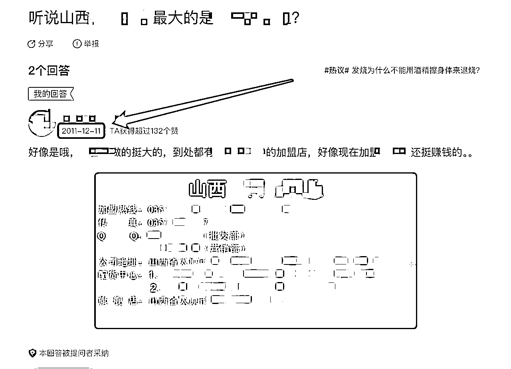
当时在网上布局的内容
（由于年代久远，当时布局的内容已无法查找。我只找到了这一个，看起来粗糙而青涩。我截图贴上来，算是对曾经的经历和业绩的致敬吧。）
在拓展市场的过程中，我除了利用“百度知道”进行内容布局，又略加了一些宣传策略，我们的加盟店便以每年30多家的速度扩张。单2013年的业绩就较上年增长了66.67%，而市场拓展成本还不及同行的十分之一。我们迅速成为了本地内衣届的翘楚，并且整体运行健康，慕名而来和转介绍的人络绎不绝。受客户的抬爱，我本人也随之在行业内声名鹊起。
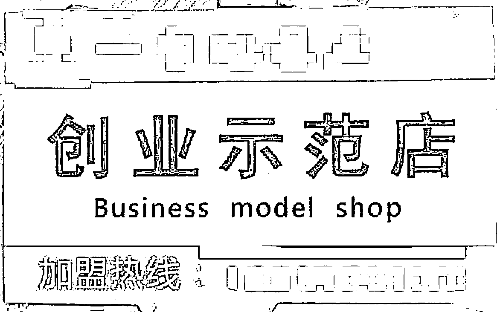
当时的宣传策略之一
（如果在加盟店直接挂广告，客户肯定不愿意。但是说这个店是示范店，客户就特别想拥有这么一个称号，并且愿意粘贴在显眼的位置。这样客户的情绪价值有了，我们宣传的目的也达到了，这就是相互滋养的思路。）
这是我第一次见识到互联网的威力，从此“通过互联网搞营销”的想法，便深深的根植在了我的内心。从那个时候开始，我便关注到了“视频内容”在网上的影响和作用。
当时主流的视频网站是优酷、酷6这种老牌网站，创作者的收益还是很单一的贴片广告分成，当时的创作者们被称为“拍客”。
接触了“网络视频”这种形式后，当时我就萌生了“通过视频形式进行线上内容布局，辅助线下引流转化”的想法。于是就用DV机拍摄了我人生中的第一条视频作品，用会声会影简单剪辑后发到了优酷。后来又陆陆续续的拍摄了一个小系列，我记得大概是5集左右，内容主要就是内衣店如何选址、如何陈列、如何搞活动这些干货软广。可惜年代久远，网上的内容已无法查找，原始文件也不知去了哪里。
成效还是显著的，线下的品牌影响力叠加了线上引流的buff，我们的业务空前爆火。当同行还在疯狂招聘业务员，满山西出差拜访零售店的时候，我却不需要业务员，不需要出差，不需要费用，每天在茶桌前接受客户的车轮战。上班路上电话接一路，到公司后这边正在接待那边就又有咨询者在等候了。那时真的是说话说到气短，喝茶喝到想吐，每天都在疯狂忙碌处理业务。也亏的是那时候年轻，如果换到现在，用不了几天估计骨头也散架了。
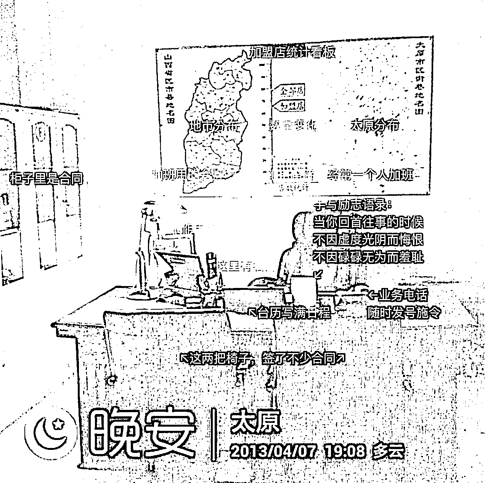
当时的工作布置
（二十多岁的我还是很拼的，全身心都在业务上，真的是以公司为家。）
虽然已经是十几年前的操作了，但是现在看来网络营销的基本逻辑至今未变。请大家记住下面这套方法，这是网络营销的底层逻辑，是我亲自验证有效的，曾每年为公司带来上千万增长的一套公式。
重点知识：
根据业务需求设计关键词 → 制作情绪引导内容并埋设关键词 → 在流量平台进行内容布局并命中关键词 → 通过关键词将内容推送给用户 → 承接流量进行转化
如今的互联网环境，已经是短视频时代了。虽然内容呈现和用户检索的方式发生了变化，但是底层的逻辑完全是一样的。之前是这样，现在还是这样，未来20年依然会是这样，大家看一下表格对比就一目了然了。
通过上面的表格对比大家就可以看到，十年前和现在最大的区别就是平台变了，除此之外的变化就是：
小贴士：
从网络营销的维度来看，互联网十几年的发展，底层逻辑并没有改变，带来的唯一变化就是：平台变了，更便捷了。
随着市场份额的暴增，我慢慢开始在公司和客户中呼风唤雨，年轻气盛的我逐渐迷失了自己。也许是压力太大，也许是权力过高，也许是人太年轻，自身的性情开始变得狂躁，导致生活、职场、事业全都一塌糊涂。
这种处境让我非常痛苦，痛定思痛后，我想换一种生活。在意识到互联网是未来营销的大趋势后，我决定重新选择自己的职业方向。从2015年开始，便放弃了在传统行业的所有业务和生意，辞职了原来的工作，关闭了自己的店铺，毅然决然的选择在巅峰离去，一头扎入了互联网的海洋中。
职海沉浮，行深似水。从开始的业务员，到后来的运营经理，再到后来的产品总监。我用了7年的时间，把互联网的路数摸了一遍。这期间在上市公司做过，在本地行业龙头公司做过，在小项目公司做过。在这个过程当中，我搞明白了之前搞不懂的关于互联网的一切问题，对互联网也有了更全面的认识。
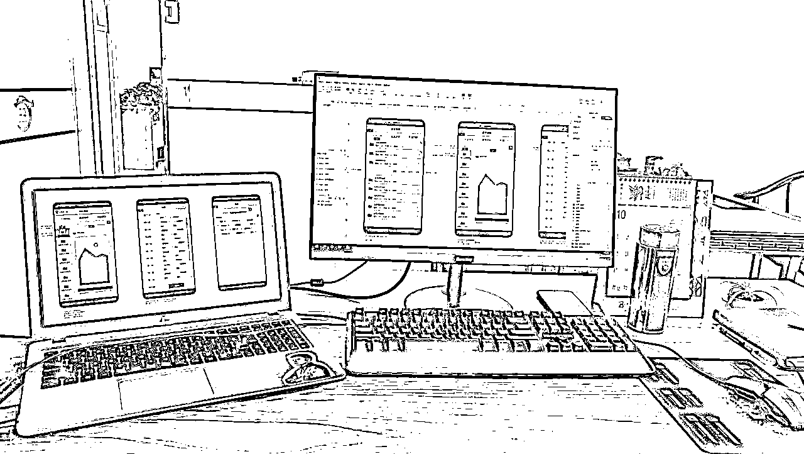
当时的工作日常-做产品原型
（构思产品原型最基本的条件，就是要想明白业务的逻辑和链路，才能根据业务设计软件的功能架构，再通过模型展示出来。其实所有的业务都是一样的道理，只不过表现的形式不一样罢了。）
在这段经历当中，我发现太多的人对互联的认识是存在误区的，这些误区到现在其实也还存在。我希望大家能够摆正这些认识，如果对互联网的认识存在误区，那么在战略上就会出问题。有太多的老板就是由于认识不足，导致经营出现战略性问题，这种情况太多了，令人痛心疾首。
误区一：我不是互联网行业，互联网与我没关系。
在我熟悉了互联网业务以后，我曾经找到之前任职的内衣公司，提出借助品牌现有影响力，通过微商城（当时正是风口）开放线上代理，私域分发转化的营销方案，并愿意与之合作运营。但是老板认为内衣行业是传统行业 ，与互联网没有关系，所以对我说的方案没有什么意向。
有意思的是，两年后老板主动联系我，想就我之前提出的方案进行合作。但风口已过，我拒绝了。现在该公司也在搞互联网营销，也在抖音宣传引流、直播带货。有意思吧？
重点知识：
「通过这段故事，我想告诉大家的是」
互联网并不是一个行业，而是一个时代，是生产工具的升级。任何公司和行业都无法脱离互联网的属性，所有的业务都应该去快速的融入互联网，而不是以行业进行区分来狭隘的划清界限，那样将是逆时代而行。
之所以有“互联网公司”这个概念，是因为有些公司是基于互联网开展业务的。可能是技术性的，也可能是平台性的，也可能是交易性的，但他们只能称作互联网公司，不能笼统的归为互联网行业。
举个例子：
「为了理解互联网时代的行业变化，这里举几个例子」
小贴士：
正所谓“天下大势，浩浩汤汤，顺之者昌，逆之者亡”，我想大部分明智的老板早就认识到了这个趋势，已经开始或准备开始，通过互联网布局自己的业务了。
误区二：互联网就是财富的代名词，只要搭上就能赚钱。
你信不信到现在还有人认为：互联网就代表财富神话。认为只要搭上互联网的概念，金钱就会源源不断的滚来。有多少传统老板，就是在这种认知的驱使下，不计后果的在互联网项目上疯狂投入，最后导致血本无归的。
我们山西的这种情况特别多，很多原先靠煤炭业务发家的老板，还是开矿的思维。以为大投入开起来以后，就能源源不断的产生收入，殊不知互联网可不是煤矿，盲目的投资结果导致一地鸡毛。这边有句戏谑的话，就是讽刺这种现象的：煤老板改行互联网，从流氓变文盲。
其实出现这种认知也情有可原，毕竟很多原先在传统行业的老板对互联网不了解，在网上看到的信息也都是一些别有用心的鼓吹，于是就形成了“互联网就等于赚钱”这样的错误认知。
即便是在互联网普及度已经如此之高的今天，依然有很多人认为抖音或直播就是赚钱的代名词，以为学会直播或学会短视频，就可以坐等财富奔涌而来了。就是因为有这样的认知，才导致很多人被疯狂收割。
这样的例子，我在互联网公司求索的这几年，实在是看的太多了。特别是从传统行业改行的那些创业公司，每天就生活在暴富的幻想之中。在暴富的幻想下，所有决策都是变形的，即将踏入深渊，还认为自己先人一步，比原先的圈子高级，而沾沾自喜。
重点知识：
「我想通过这种现象，告诫诸位老板们，特别是干传统行业赚到点钱的老板们」
在看待互联网这件事上，应该保持一贯的理性和平和。互联网就是信息技术发展的产物，是科技和时代的进步，它不应该被涂上任何财富神话的色彩。
赚钱的本质是商业的成功！而商业的成功是“系统工程+天时地利人和”的结果。而互联网只是一个项目载体或营销渠道，本质上就是一个工具而已，并不能直接带来财富。
小贴士：
想通过互联网赚钱，只要我们摆正认识，踏踏实实去学习去积累，去搭建自己的商业系统，总有天时地利人和聚齐的时候。希望大家不要毫无根据的幻想，也不要因为曾经受过一些损失就谈网色变，坚持正确的精进才是我们应该秉持的态度。你我都一样，在此与大家共勉。
我的结论：互联网是效率工具
互联网究竟是什么？我想可能每个人的答案都不同。但是从营销的角度来看，互联网就是一个效率工具。我想不论是现在已经在互联网上折腾项目的老板，还是正在做传统生意的老板，都应该搞明白下面这个基本逻辑。
重点知识：
互联网只是做生意的一个效率工具，而生意本身应该是一个赚钱系统。想通过互联网赚钱，就要去搭建一个可以赚钱的系统，并使它正常运转起来。互联网这个工具，是组成赚钱系统的提效工具，它并不能在生意中独立的存在，也没有必要推翻现有的业务模式。只需把它兼容到自己现有的业务中，就能发挥降本增效的作用。
举个例子：
「为了理解“赚钱系统”的概念，我们举一个例子。」
看完上面的案例，相信你理解了我说的赚钱系统是什么意思了。那么互联网这个效率工具，是如何提升赚钱系统的效率的呢？我们还是以服装零售生意为例，对传统模式和抖音模式，进行解决方案和实施成本的对比，大家请看对比表。
举个例子：
「以太原中等水平商店为例，粗略对比如下：」
| 传统模式 | 抖音模式 | |||
|---|---|---|---|---|
| 解决方案 | 实施成本 | 解决方案 | 实施成本 | |
| 货源 | 厂家选款进货 | 首批300件，约3w | 精选联盟选品 | 首批300件，0w |
| 展示 | 租商铺进行展示 | 转让费+租金+装修，约20w | 视频展示 | 样品快递费，约0.6w |
| 销售 | 导购讲解 | 2人，约1w | 视频讲解 | 模特+制作，约1.8w |
| 客源 | 商圈自然流 | 0/月 | 平台自然流 | 0/月 |
| 筹备时间：约3月 | 启动资金：约24w | 筹备时间：约1周 | 启动资金：约2.4w |
通过对比表就可以清晰地看到，同样是启动一个服装零售项目，无论是时间上还是资金上，传统模式的成本基本上是抖音模式的十倍。而且传统模式只能覆盖本商圈流量，商品曝光天花板有限。而抖音模式可以覆盖全国流量，商品曝光理论上有无限可能。如果再加上天气因素、城市活动、市政修建等对生意的影响，以及生意失败后重新起盘的难度，传统模式的隐形成本，可能会是抖音模式的几十倍之多。
小贴士：
不论是新项目启动，还是老项目拓展，有了互联网这个效率工具以后，进入门槛变低了，启动成本变小了，覆盖面变大了，影响因素变少了。所以互联网工具的应用，使创业效率提升了，投资风险变小了。
重点知识：
这里再强调一次：要搭建一个可以赚钱的系统，而不是脱离系统去凭空研究一个所谓的互联网，或者去学习某一个技能，亦或者去研究某一种思路，更不是要去钻营某一类技巧。如果脱离系统，这些工具、技术、思路、技巧将毫无意义。皮之不存毛将焉附，“舍本逐末”是项目做不成的根本原因。
2021年的最后一天，重病十年的母亲终究离世了。操办完母亲的葬礼，原本就摇摇欲坠的原生家庭关系，在一瞬间轰然倒塌。在母亲离世的悲痛和家庭关系恶化的双重打击下，我的身体彻底垮了，突然就病倒了。连续两个月的时间我无法出门，只能在家养病。当我独自躺在床上不得动弹的时候，身体的不适合和内心的悲痛像潮水一样涌来，无情的将我淹没。生活一地鸡毛，何去何从毫无头绪。
当时拍的片子
（腰椎曲度消失，椎板撕脱性骨折，椎管狭窄，压迫坐骨神经。那种感觉就像是被挑断了脚筋，不能下床，不能躺着，吃饭都得趴着，现在想起来都疼。后来经过治疗虽然能正常活动了，但是我走路瘸了，康复训练了一年才恢复正常。告诫各位，虽然要奋斗，但是千万要注意身体。）
就当我在黑暗中苦苦挣扎的时候，我的好朋友张集慧像一道光一样照进了我的生活，鼓励我振作起来。在他的劝解下，我意识到母亲离世后，捆绑我十年的绳索也就不复存在了，我无需再陪侍病人，也无需再拼命赚医药费。我有更多的时间和精力可以自由支配，我不必再有所顾虑，可以有新的尝试。于是在他的指导下，我边养病边开始研究短视频带货。
第一次变现是2400元，那一天是2022年2月13日。在意识到短视频是互联网时代的一个新纪元，是普通人翻身创业的大机遇之后，我便全职投入了短视频带货的实践当中。也是这一年，我有幸在张集慧的带领下加入了生财有术，成为了生财众多圈友中的一个小透明。既不发声也不写帖，只是偶尔翻一翻别人写的文章，然后埋头实操自己的项目。
不得不说，生财有术为我打开了通往新世界的大门，这里的信息含金量确实很高。在生财的信息加持下，经过一年的实操，我通过中医养生赛道赚到了短视频带货的第一桶金。同时也得到了比金钱更有价值的东西，那就是在这个过程中积累的经验和技术。
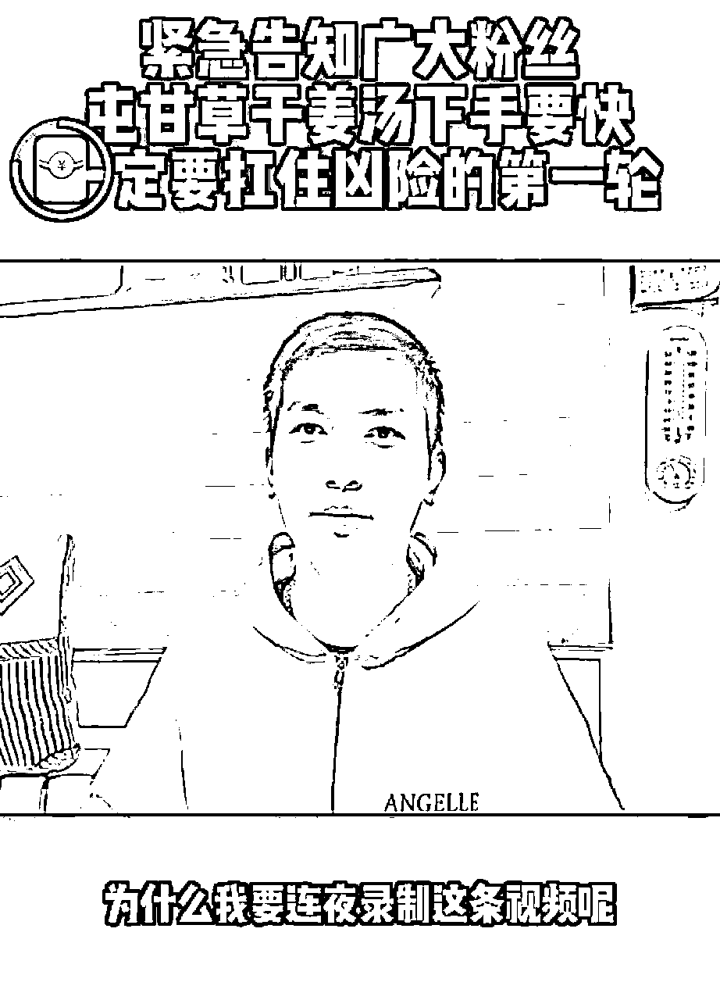
这是被同行搬运最多的一条作品
（这条视频就是我通过生财“风向标”看到甘草干姜汤的信息后录制的，单这一条视频就带来了2.6w的带货佣金。这条视频当时被同行疯狂混剪，差点被推成了养生网红，这句开头到现在都被很多博主抄袭。）
新的积累与过去的经验融会贯通，我对短视频入局也有了一套自己的理解。在这里我想为准备开始实操短视频的朋友，强调两个重点。一个是入门时容易被忽略的，看似无关紧要但实则影响巨大的概念和术语。另一个是在实操时常常被忽略的核心。
重点一：搞清概念和术语
如果想做一件事情，就要先学习这方面的语言。在实操短视频之前，搞清楚一些基本术语和概念是很有必要的。因为这是确保理解不会出现偏差的前提保障，也是正常学习交流的重要基础。如果搞不清这些东西，就无法正常交流和学习这个领域的内容，更谈不上正确理解。如果连学习交流都有问题，理解都是有偏差的，那实操的结果又会是怎样的呢？
我想大部分朋友对这些基础知识还是知道的，但是那些还没来得及研究新媒体的朋友可能还不太了解。所以在这里为那些不熟悉的朋友，简单普及一下这些基础知识，为后面的交流、学习、实操奠定基础。
重点知识：
「这件事看起来无关紧要，所以常常被人忽略，实则非常重要，是信息获取和传递的重要基础。」
什么是内容：你所发布的东西就是内容。比如：写的文章、录的视频、拍的照片
什么是平台：内容发布的地方就是平台。比如：抖音、快手、视频号、小红书
什么是赛道：内容所属的领域就是赛道。比如：好物、养生、书单、美食、亲子
什么是形式：内容呈现的方式就是形式。比如：文章、视频、图片
什么是流量：内容被多少人看到就是流量。比如：播放量、浏览量、阅读量
什么是粉丝：关注了账号的人就是粉丝。比如：抖音粉丝量、快手粉丝量、视频号粉丝量
什么是制作：内容生产的过程就是制作。比如：剪辑视频、设计图片、编写文章
什么是运营：经营账号的工作就是运营。比如：分析数据情况、选品、评论引导
什么是转化：经营带来的收益就是转化。比如：视频转化、直播转化、私域转化
什么是伪知识：忽悠不懂的人的东西就是伪知识。比如：流量不好是因为发布方式不对、同一个WiFi下不能接入多个账号
什么是规则：规则就是什么能干什么不能干。比如：原创正能量作品可以发、涉政涉军医疗迷信内容不能发
重点二：在核心上下功夫
很多朋友在做短视频的时候，要么是没有头绪闭眼冲，要么是抓不住核心瞎忙活。操作短视频的时候，什么才是核心呢？可能很多朋友到现在都没想明白，经常会把精力用在一些莫名其妙的地方。不是研究画面如何更精美，就是在研究特效如何炫酷，或者研究内容如何吸引人，其实这些都是误区。
举个例子：
「为了更好的说明我讲的误区，给大家举几个例子。」
可能有朋友就不理解了，这些不都是需要做的吗？如果你也这样想，我想请大家记住下面这句话。
重点知识：
你的业务才是核心！记住是：业务！业务！业务！不要在与业务无关的地方浪费时间和精力。你的画面再精美，你的特效再酷炫，你的播放量再高。如果不能带来业务，那追求这些有什么意义？
很多视频看起来很垃圾，播放量也一般，但是人家就是赚钱，你有什么脾气？我们不妨来模仿一段网上之前出现过的幽默对话形式，来感受一下这种区别。
你说：我逼格比你高。
他说：我赚钱了。
你说：我画面比你美。
他说：我赚钱了。
你说：我模特比你漂亮。
他说：我赚钱了。
你说：我播放量比你高。
他说：我赚钱了。
你说：我剪辑比你细致。
他说：我赚钱了。
你：......
然后低头看了看自己的账号收入，一个辣眼的数字：250，仿佛在无情的嘲笑你，然后你的世界观崩塌了。
这几乎是每个下场的人都会进入的误区，包括我自己也是从这些误区里走出来，才会在这里振臂疾呼，呼吁大家不要再走弯路，不要在错误的地方浪费太多精力，从而耗尽自己的信心和动力。
小贴士：
所有的精力都要放在你的“业务链路”上，所有的操作都要以“业务”为核心开展。与业务无关的操作，做的再好也只能徒增成本，浪费时间和精力。当你忙碌的时候，一定会要抬起头问自己：这件事能带来业务吗？如果不能，请立即停止。
在我的经验和技能中，最被人熟知的，就是鉴于我产品经理的功底，经过反复钻研优化，摸索出的一套高效混剪方法：「单人日产200条批量混剪教程」。这套技术在生财发布后产生了热烈的反响，也使得我在一段时间内被众多圈友熟知。以至于后来用了很长一段时间的刻意隐身，才使气氛慢慢冷却下来，恢复到可以独自思考的状态。
当时在生财有术看到很多人都有自己的精华分享，我内心产生了些许不甘心，也想在生财这个圈子里留下一点自己的痕迹。不求有多大的声望，只想证明自己来过。当时分享项目的人已经很多了，我再说一次似乎也没什么太大的价值。但是我发现大多数的帖子都是说项目的，技术类的帖子很少很少。于是我将自己摸索出来的「单人日产200条批量混剪方法」写成实操教程帖发在了生财。
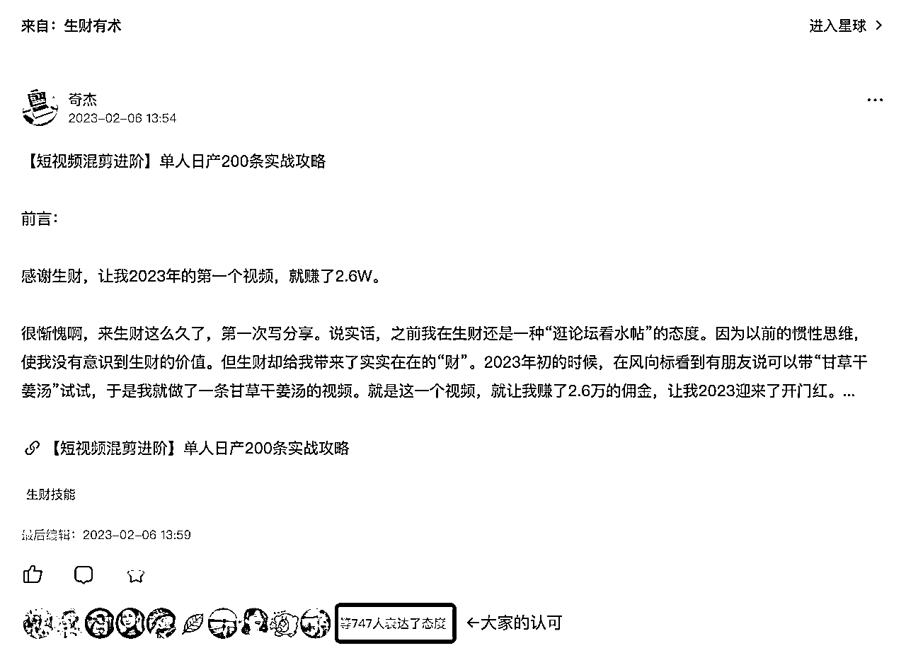
批量混剪原帖
（这是我在生财的第一篇帖子，也是我的成名帖。就是这篇帖子为我与众多圈友们带来缘分，也让我从此走上了教练之路。原帖链接：https://t.zsxq.com/19tz08QHB）
结果是出乎我意料的，大家很喜欢这套技术。但是由于图文表达实操过程的局限性，很多圈友希望能有一个更直观的视频教程。于是亦仁老师邀约我，做生财有术第一条视频内容的创作者。于是我将批量混剪做成了视频教程，由亦仁代发布在生财。结果就激起了圈友们空前的学习热情，很多朋友都接踵而至想交流技术细节。后来在生财官方的协调下，我很荣幸的开始在各类短视频航海中担任剪辑教练，为圈友们分享视频制作知识，解答实操问题。
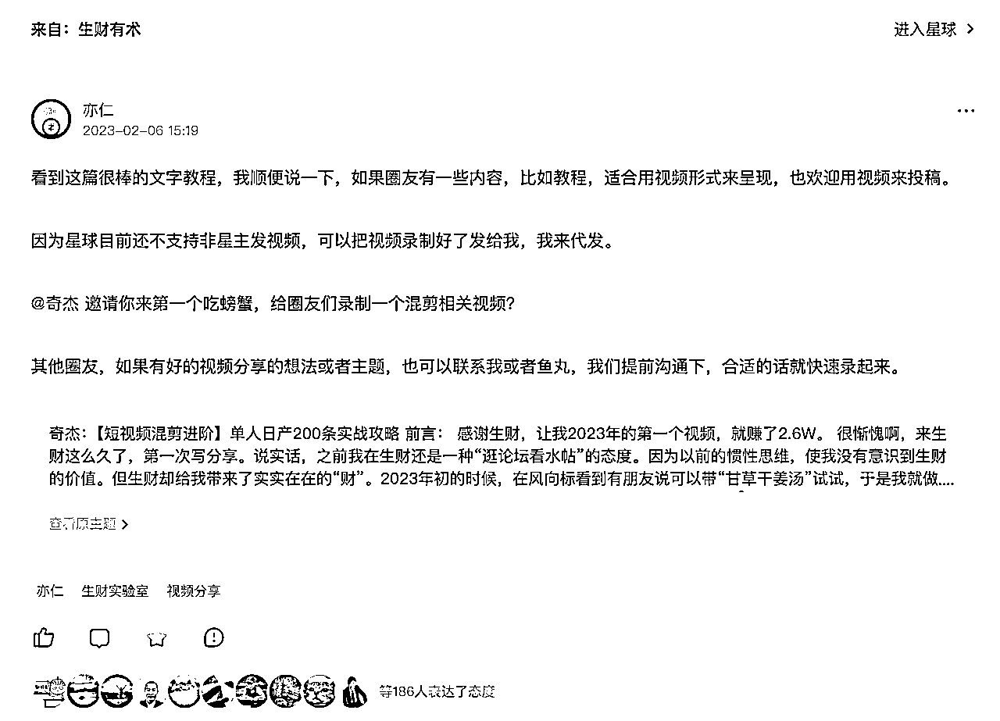
帖亦仁老师的邀约
（原帖链接：https://t.zsxq.com/p4z4H）
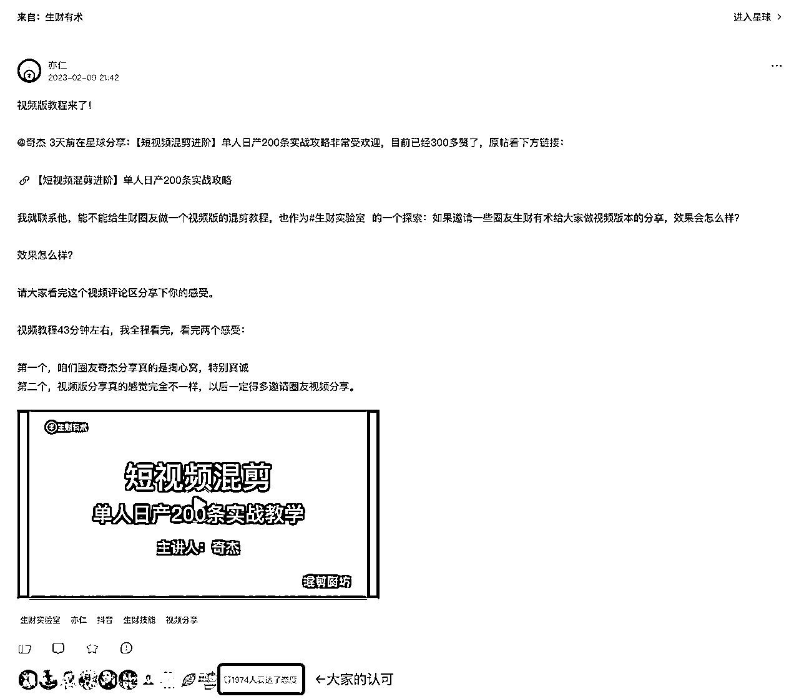
亦仁老师代发的教程
（原帖链接：https://t.zsxq.com/19wMfZGc4）
更让我意想不到的是，在3月的全国线下见面会，官方竟然邀请我做分享嘉宾。于是在各位官方老师的帮助下，我梳理了分享内容，并在杭州的千人大会为圈友们进行了现场分享。由于当时讲的太过投入，没有把握好时间，我给自己的分享只能打60分。但这依然没有阻挡众圈友们的学习热情，线上线下的交流根本停不下来，大量的交流和信息搞的我头昏脑涨。但是我内心是快乐的，因为我看到了大家的认可和自己的价值。
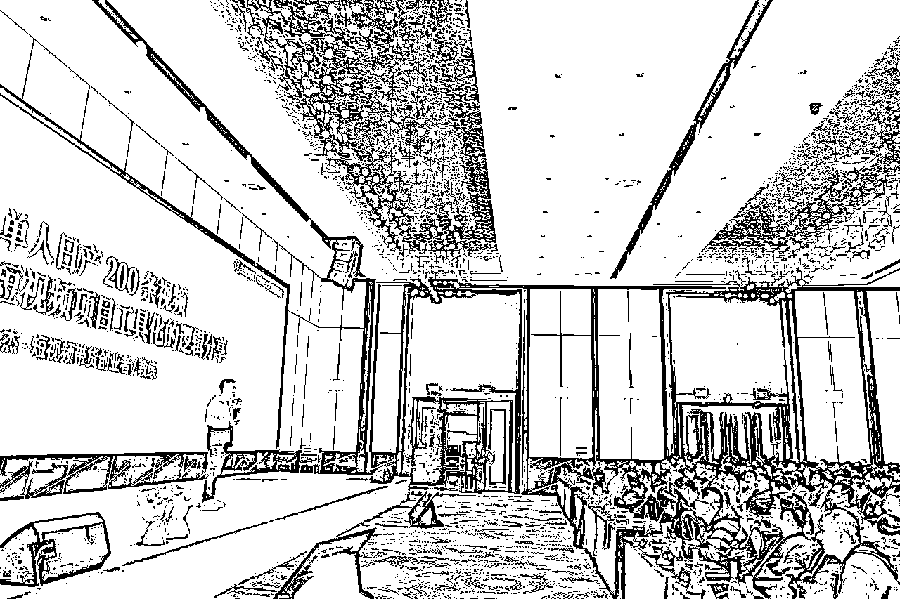
全国见面会为大家做分享
看到圈友们对制作视频这么的求知若渴，于是生财官方推出了专门教授短视频剪辑的航海「剪辑特训」。我和官方老师配合起草制定了航海手册，录制了视频教程，完善了教学流程和细节，也顺理成章的成为了主教练。
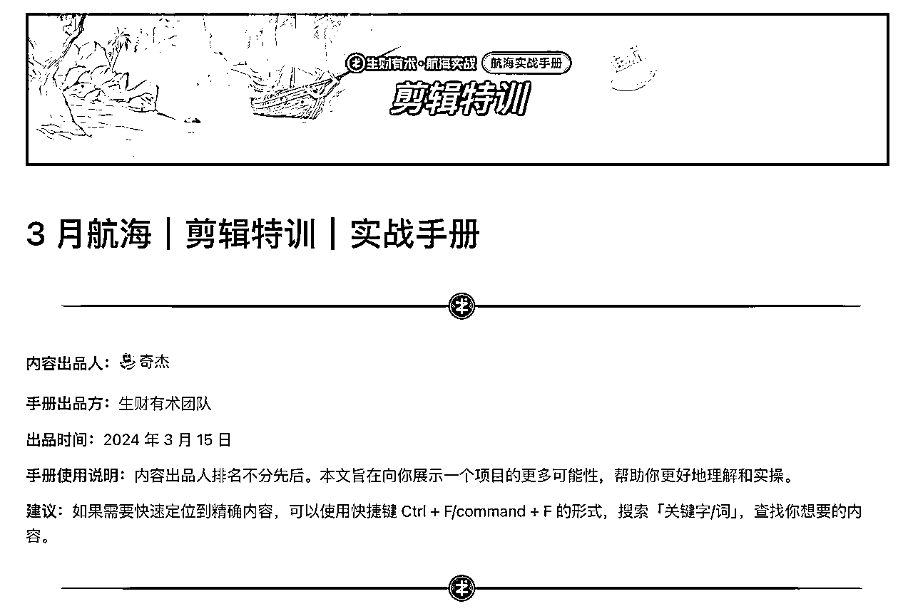
剪辑特训航海手册
（手册链接：https://scys.com/view/docx/IeBrdyLmso2KHIxBb1Sc0fI9nwc）
在经历了数千人次的教学后，我解答了无数的问题，也与很多朋友进行过交流，我发现太多同学会陷入到“学废”的各种问题中。正是因为这些问题，导致很多朋友没有学成。这些问题需要大家警觉起来，否则就会在歧途上越走越远，从此踏上一条不归路。我在教学中发现的“学废”问题，大致可以分为四类。
第一类问题：钻营取巧
大家似乎对“效率、技巧、工具”的热情过于狂热，疯狂追求“省事、绝招、神器”，结果就失去了踏实进取的学习态度，天天钻营取巧，在学习的道路上越学越偏。而这种狂热情绪，也吸引来了太多的鼓吹者，在疯狂的鼓吹下，又掀起了更狂热的贪巧求速。
举个例子：
「关于什么是钻营取巧，在这里举几个例子。」
我在这里想说明一点：工具本身是没有问题的，功能强大也是事实。但是好工具也得“好手”用，才能发挥它应有的价值。如果自己不踏实学习，勤奋实践，再好的工具在手里也是鸡肋。不是工具出问题了，而是心态出问题了。
我在教学中常说的“遇到问题绕过去”，本质上也是一个思考工具。给了踏实学习的人，就能启发思考更合理更高效的解决方案。给了不愿用功的人，就会引导钻营取巧。正所谓：正人用邪法，邪法亦正；邪人用正法，正法亦邪。
而真正的危害不是买了一堆无用的工具，那点损失都是有限的。真正的危害是：养成了钻营取巧的习惯。遇到不懂的问题，第一反应不是踏实学习，而是如何钻营取巧。这种思维习惯是非常危险的，带来的潜在危害和损失也是巨大的，希望大家一定引以为戒。
小贴士：
“巧”是从“笨”中来的，熟能生巧就是这个道理。“熟”的前身就是“生”就是“笨”，别人“巧”是因为下了“笨功夫”才变巧的，不是因为别人的工具比你好。如果自己不肯下功夫，工具到手里又能发挥多大的价值呢？就像盖房子，如果不先打地基盖一层，如何能直接建二层呢？
第二类问题：毫无章法
很多朋友在学习的时候，经常是不经思考乱干一气。不思考某些操作的必要性和合理性，也不听老师的强调和告诫，只是一股脑埋头瞎干。结果事费了不少，最后也不知道做了些啥。
举个例子：
「关于毫无章法，我们举几个例子。」
这就是我为什么要在教学中说“遇到问题绕过去”的原因，大家应该去思考更优的解决方案，而不是钻到问题的牛角尖里。
小贴士：
低品质勤奋是没有意义的，不加思考的学习也不会有什么效果。勤于思而敏于行，手脑心的配合，才是学习的正确方法。希望大家都引以为戒，动手之前先动脑，动脑之前先用心。
第三类问题：无脑盲从
很多朋友在面对信息的时候，不考虑自己的需要，也不考证信息的真伪，别人传什么就信什么，流行什么就搞什么。大量的时间和精力都用在了跟风口和追热点上，以至于最后什么都做过了，但是什么也没做好，这些零星技能也没什么统筹联系，浪费了大量的精力。
举个例子：
「关于无脑盲从，还是举几个例子。」
网络就是一个巨大的自由市场，大家都在叫卖自己的产品，宣传自己的业务。在这个过程当中，适度的夸大功效，都是正常的宣传手段。如果不加考虑的这个也好，那个也不错，那我们岂不是像狗熊掰棒子一样，到最后两手空空？
小贴士：
我们必须想好自己的需要，选定自己的方向，才能面对海量信息而不迷茫，准确的选出对自己有用的，切实需要的内容，加以研究和深耕，才会最终取得成果。
第四类问题：为人处事
大家都懂得一个道理：想在社会上做事，首先要学的应该是为人处事吧？但是现如今急功近利的气氛下，很多人似乎已经忘掉了为人处事的重要性。满脑子只剩下了功利，天天只想着怎么能得实惠，啥时候就能暴富。
举个例子：
「关于为人处世的问题，给大家罗列几种心理。」
太多的同学可能是因为年轻，也可能是因为太想做成事情，所以表现的太过于敏感焦躁。但是我还是想提醒大家：欲速则不达，敏感焦躁只会让自己陷入绝境。事物的发展有它客观的规律，并不会因谁的意志而改变，放松一点，慢慢来，融洽和他人的关系，能得到更多的支持。安抚自己的心灵，静下来做事，总有水到渠成的一天。
小贴士：
赚钱的前提是成事，成事的前提是为人，如果不注重自我修养的提升，事情如何凭空成功？那么钱将何来呢？
2023年的忙碌，让喜欢安静的我开始疲于应付。本来只是发一个帖子，想小小的炫耀一下自己的技术，结果一发不可收拾，莫名其妙的就变成了别人口中的“大佬”，然后就在教练的路上越走越远。我粗略统计了一下，我在线上线下各种教学和分享中，直接参与训练的人数已经达到了8600+人，如果把那些野生学习的人也算上，我想一万多人肯定是有了。疯狂的忙碌让我停不下来，也没有时间思考，深一脚浅一脚的就跌跌撞撞的走了很远。
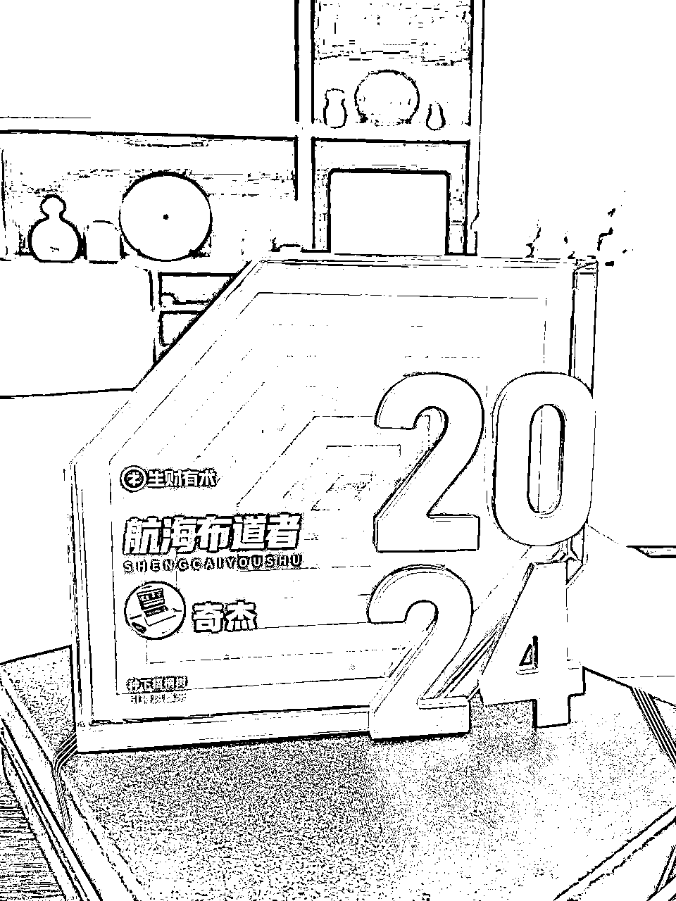
这是我的功勋和荣誉
我的教学确实给很多朋友带来了帮助，很多从中受益的朋友专程来感谢，让我非常感动。但是也有很多朋友，因为对短视频理解不够全面，所以在学习中进入了误区，走入了歧途。其实我早就发现了这些问题，也在后来的教学和直播中反复强调过一些问题。但是由于大家学习的热情太过高涨，以至于很少有人重视到这些关键问题。再加之我过于忙碌，没有时间沉下心去系统的梳理这些问题，导致强调的问题比较碎片，不足以引发大家的思考和重视。所以就看到很多朋友在热情的学习中越学越偏，越学越乱，再加上各种技巧和方法的鼓吹，导致一片乱象。
当我意识到自己的教学已经不能产生正确导向的时候，那么技术也就失去了它应有的价值。看到这些乱象，内心有一个声音一直在对我说：是时候该停一停了。于是我开始刻意隐身，慢慢的让自己淡出大家的视野，逐步放下教学的工作。让自己从热情的洪流中脱身出来，回归到安静的状态，开始反思复盘梳理总结。
我拒绝了想学习的一切诉求，几乎不参加任何聚会，尽量让自己什么也不干，安静的放松和独处，这也是我这么长时间不写帖子的原因。
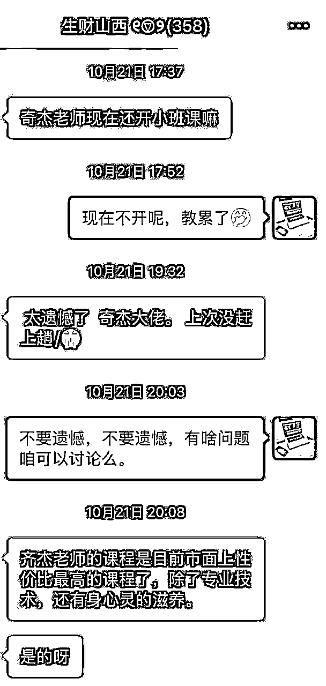
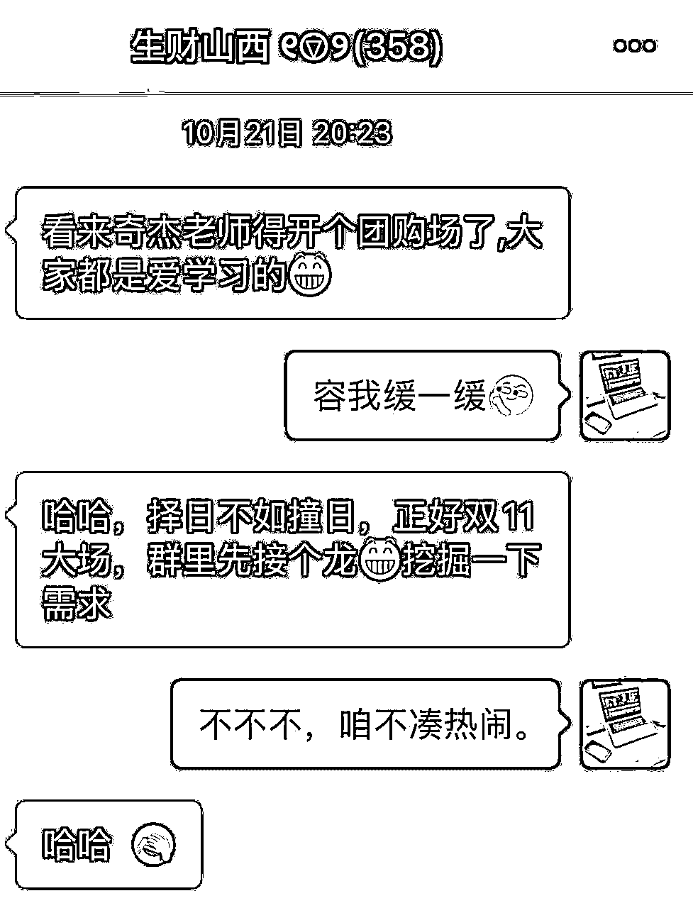
婉拒了大家的学习热情
（第一是因为意识到继续原来的教学模式，对大家的帮助很有限，而且大家容易学入误区；第二是我还没有梳理好新的框架，盲目的开展教学是对大家的不负责任；第三是我想把今年剩下的时间留给自己，毕竟我自己也需要沉淀和进步。）
经过近一年的放空，我终于解放了自己的大脑，沉淀了心绪，重新审视了之前发生的一切现象和问题。我想明白了，导致这些现象和问题的原因有三个。
问题一：被动推进，中心点就打错了
由于我的批量混剪当时太受欢迎，所以我的教学工作其实是被大家推着走的。又因为我当时的教程只是讲了剪辑，所以“剪辑”自然而然就成了教学的默认主题，所有的工作都是围绕“教剪辑”组织的，以此为中心顺带向周围辐射。结果就变成了讲剪辑，学剪辑，问剪辑，再继续讲剪辑，剪辑似乎成了做短视频的中心。
而忙于教学的我，还以为我的教学只是对大家知识体系的补充，结果却成了很多人学习的中心，一门心思只知道研究剪辑。这无形中给很多朋友带来了错误的引导，我也是停下来后才想明白这个问题。我滴个乖乖啊，到哪里说理去呢。
问题二：架构不足，导致理解错位
其实剪辑只是整套系统中的一小部分，我以为大家其他的东西都懂了，只是在剪辑上有所不足，所以尽量给大家理清楚剪辑的问题。但真相却是：很多朋友不是只差剪辑，而是只学会了剪辑。这就导致了我越讲剪辑技术，大家就越以为这是重中之重，对我一带而过的或者碎片化讲的其他东西，以为不重要所以就忽略掉了。
我的个老苍天啊，这就是：我以为你懂了，你也以为你懂了，结果我以为的“你懂了”和你自己以为的“你懂了”不是一个懂了。多么尴尬的事情，幸亏我感觉不对停下来了，仔细梳理后想明白了这个问题，不然真的要误人子弟了。
问题三：学习者需求不明，病急乱投医
他想通过短视频开展业务，但是他不会，所以他想学习。他以为学会剪辑他就会了，所以他来学剪辑。学完剪辑后他发现他还是不会，以为是自己会的东西太少（其实是不系统），所以他想继续学。那学什么呢？学那些看起来很酷的，听起来很牛的东西，然后就开始乱学了。
结果学来学去，钱花了不少，功夫下了不少，时间废了不少，结果还是不会搞。还被一个叫“奇杰”的破教练在帖子上说是“钻营取巧，毫无章法，无脑盲从”。你说冤枉不冤枉？真是，找谁说理去？哭笑不得。
小贴士：
做短视频业务，就像糊花灯一样。我们需要先扎一个框架，然后才能往上面贴纸、裱花。如果这个框架没有，学习裁纸剪花是没多大用的。总要先有了框架，才能知道裁多大的纸，剪多大的花。围绕这个框架的学习才有意义，否则就是消磨时光了。
理清了这些问题后，我闭关了整整两个月，对过去看到的现象和发现的问题进行了复盘。我系统的梳理了短视频营销SOP，想帮大家摆脱误区。让大家不要再像过去一样，只是简单的学习一套剪辑技术，或者是捕风捉影的去研究那些所谓的运营技巧和实用工具。而是能够全面系统的理解短视频营销知识，为自己的项目制定合理可行、实用高效的视频营销解决方案。
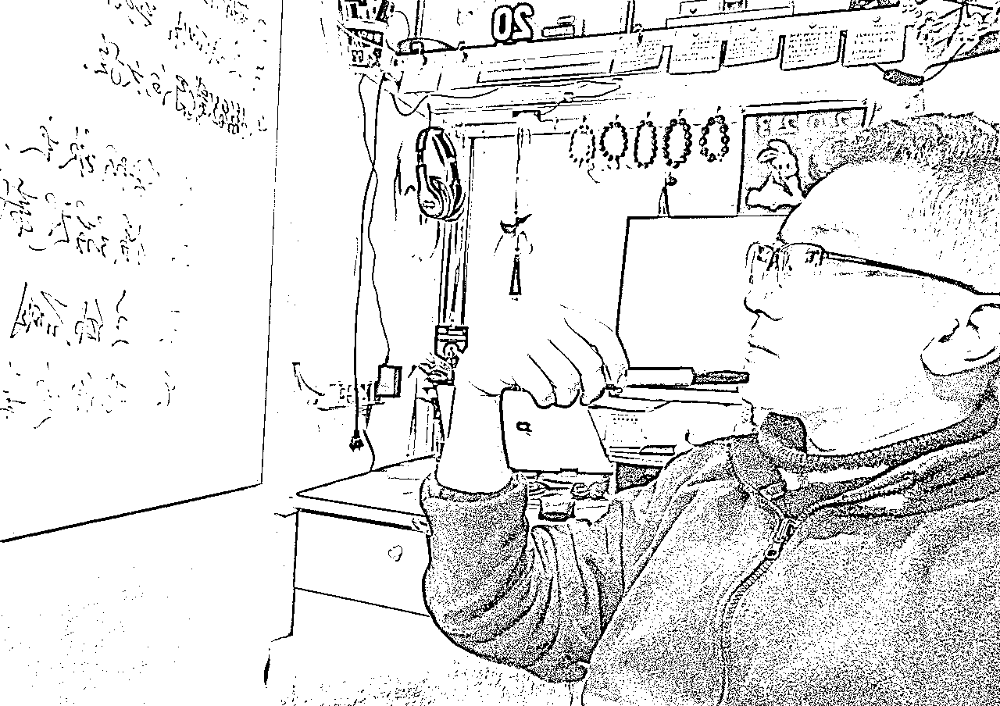
就这样一个人闭关沉思梳理
大家现在看到的内容，就是我一年多的思考和总结。
第一部分通过我的历程给大家梳理了问题，普及了认识。这些基础的东西大家了解了以后，就可以在实操的过程中避免很多弯路和误区。
第二部分是我梳理的“制定短视频营销解决方案”的系统架构。搞懂了这个架构，实操和学习就有了框架可以依循，就不会再盲目消耗自己的精力和时间。
2024年已经接近尾声，马上到年底了，我希望用这篇帖子让朋友们的思想回到正确的轨道上来，重新审视和调整自己的方法和策略，为2025年的事业发展提前铺垫基础。希望接下来的内容，能对大家有所帮助。
「解决方案」的另一个名字就是：该怎么做。那「短视频营销解决方案」该怎么架构呢？方法就是：思考关键问题，并为之找到答案。然后就可以根据方案去拟定计划，并在实施中不断调整优化，最后形成闭环，搭建成属于自己的赚钱系统，或者兼容到现有的赚钱系统中。
如果你还没有开始操作短视频项目，那你先不要着急去学什么剪辑技术，也不要去研究什么实用工具，更不要去挖掘什么创意点子，更不要去听那些所谓的运营技巧。如果你已经在操作短视频项目了，建议你先先暂停一下手上的工作，先来厘清这些关键问题，然后再重新审视一下自己现在的操作是否合理。
这个环节很重要！如果不想明白这些问题，你的忙碌将毫无头绪，不但不会有什么成效，反而容易使自己陷入自我感动的陷阱。即便你取得一星点的成效，也会是短暂的昙花一现，过不了多久将继续陷入迷茫，重新在黑暗中无序摸索。当然在这个过程中大概率会踩坑，也容易导致自我怀疑，进而内耗自己失去前进的动力。记住一点：内耗就是自我凌迟。
视频或图文，只是你输出内容的外在形式，发什么视频？为什么要发这个？作用是什么？这些问题没有搞清楚之前，发视频的意义何在呢？想要搞清楚这些问题，就要先把核心问题想明白。上面已经跟大家说过，你的“业务”才是核心，所以思考短视频方案之前，要先搞清楚自己的业务问题。如果连自己的业务都想不明白，那短视频方案就是空中楼阁。
小贴士：
我们在平台看到的，都是制作好的内容，但是请记住：建立不在业务上的制作，只能称作玩耍。
情况一：
有些朋友连一个自己能做的业务都没有，就开始研究怎么制作视频，怎么搞创意，怎么运营账号。这不是本末倒置吗？如果连女朋友都没有，那买玫瑰干什么用呢？如果你属于这种情况，第一步应该做的是：把本帖先收藏起来，现在就去找一个自己的业务，等有了业务以后，再来看这篇帖子。
小贴士：
找业务的时候，要记住两个原则：自己能干的+赚钱的。
原则一：自己能干的
重点知识：
你看到的业务再好，但是你条件不够干不了，那就不要浪费感情了。
举个例子：
小贴士：
如果干不了就不要强求，不要当倔驴，去筛选一个自己能干的，轻松驾驭它不是很香吗？
千万别说不知道怎么找业务，生财有这么多项目，仔细筛选总有一个适合你吧？也别来让我推荐，如果不知道自己能干什么项目，别人不可能比你更了解你自己的情况。
原则二：赚钱的
重点知识：
自己再熟悉的业务，再喜欢的项目，如果现在和未来都不赚钱，那也就没有必要浪费精力了。
假如你之前一直是做某个生意的，但是由于业态变了市场需求已经很小了，项目已经无法盈利而且大势已去，未来也不会有什么改观，那这个生意也就不能干了。再干下去也只是内心的不甘和挣扎，又何必苦苦煎熬呢？做生意本来就是为了赚钱让生活变得更好，又何必为难自己且浪费人生呢？
如果你选择的业务，只是考虑了自己的兴趣和爱好，但项目本身是不盈利的，而且也没有布局未来的盈利点，那这个生意也不能干。你别说自己干的是情怀，在没有足够的财力之前，还是先考虑眼前的生活吧，情怀的事可以先放一放。即便你做的是公益项目，也得有捐赠款不是？如果没有利润和资金，靠什么运转呢？咱们做的是生意，需要用的是眼光和智慧，不是天真的想法和无谓的执着。
小贴士：
如果现在没有自己的业务，看到这里就先收藏起来，去找业务吧。找到适合自己的业务，不要着急瞎干，再回来继续看本帖，然后就知道该怎么干了。
情况二：
另外有一些朋友，是连自己的业务都想不明白，就开始瞎研究瞎折腾。
举个例子：
比如你是一个英语老师，只知道发短视频展示自己的英语水平，但是你的业务是什么呢？好多人就只能笼统的回答：教英语，这也太含糊了。你是要通过什么形式教英语呢？产品是什么？是卖资料呢？还是卖课程呢？还是卖服务呢？这个一定要搞清楚，如果这个问题没有搞清楚，后面的操作都是乱折腾。
小贴士：
构思业务的时候，也是两个原则：用户需求+自身优势。
原则一：用户需求
重点知识：
一件事不管你干的再好，但是没有人需要，那就没有必要搞了。
有的朋友构思业务的时候，不关注用户的需求，只考虑自己的情况，这样是有问题的。做再好不也是为了卖吗？卖不掉的东西，做再好也不会成为好业务啊。就像之前那些生产胶卷的，现在已经是数码摄影时代了，用户哪还需要什么胶卷，做再好也卖不掉啊。
举个例子：
我们还是拿英语来做例子，如果只考虑自己口语很厉害，日常交流很丝滑，就推出做翻译的业务，这显然也是不考虑用户需求的决策。日常老百姓有几个需要翻译的呢？那些需要翻译的人物们，又会不会找你呢？教育市场那么火爆，是不是应该考虑这个方向才合理呢？
小贴士：
不管是生产，还是经销，亦或者是服务，构思业务一定是需要考虑用户需求的，不考虑用户的需求就不是做生意了，而是在自嗨。千万别说你看不懂市场的需求，如果实在看不出来，就去看看你的同行们正在干什么吧。
原则二：自身优势
重点知识：
市场需求再大，如果你自己没有这方面的优势，那也就没有胜算。
经常能看到一些朋友，看到啥生意火，就感觉自己也能搞，于是就一头扎进去了，结果就是头破血流一地鸡毛。除了基本能力以外，还有个竞争力的问题需要考虑吧？毕竟这个赛道又不是为你一个人准备的。只有把用户需求对接到自己的能力优势上，才能超越对手，才能分得一块市场。
举个例子：
就像有的人唱歌唱得不错，并不代表就能做音乐博主了。所谓的唱得好，只是在生活圈子里唱得比较好，跟专业的歌手比起来，还是有很大差距的。喜欢听歌的粉丝，凭什么会关注你呢？但是如果你身材火辣，那唱得好不好就无所谓了，因为用户关注的不是你的歌，做一个颜值主播也是有市场的。
小贴士：
构思自己的业务，就要在自己有优势的领域，找到市场有需求的点。没有构思好之前，先不用忙着折腾后面的事情，连卖啥都没想清楚，研究怎么卖也没有根基。
重点知识：
大家要注意顺序：是在自己有优势的领域找市场需求点，不是在市场需求点中找自己的优势，千万不要弄反了。因为自己的优势是有限的，找起来很容易。而市场的需求是无限的，找起来是大海捞针。找到1以后，2就相对好找了。所以找1要在有限中找，不能在无限中找。
另外，找业务是为了赚钱，想赚钱就得占份额，有优势才能有竞争力。如果找到一个市场需求，才开始在这方面培养优势，那等培养好了，黄花菜不是凉了，而是发霉了又放干巴了。用一句不文明但是很形象的话说就是：吃屎都赶不上热的。
构思好自己的业务后，就应该考虑销售的问题了，不同的产品它的性质和价位也都不同，所以销售的特性也不一样。只有用对销售方法，产品才有可能卖出去，如果用错了方法，基本上就等于是瞎忙了。
重点知识：
「根据用户购买产品时的决策成本和成交链路，我们大致可以分为四种销售特性。」
当然这里不可能举出所有产品的例子，只是想用产品的例子让大家明白：不同的产品的销售特性不同，所以应该选择适合的销售方式，才有转化的可能。
举个例子：
比如你的业务是卖房产，但是你却不邀请客户去实地考察楼盘，而只是向客户展示房子的户型、装修、和价格，你感觉你的行为符合房产的销售特性吗？卖出去的概率有多大呢？你不得邀请客户去实地去感受一下房子的舒适、环境的优美、周围的便利、再加上优惠活动、和你的人格魅力，才有成交的可能吗？
小贴士：
先搞清楚自己业务的销售特性，再研究后面的问题。营销问题环环相扣，如果这个问题没搞明白，后面的问题就没有方向。
业务构思好了，销售的特性也分析清楚了，那就需要考虑承接流量的方式了。这里需要注意：承接流量的方式，既不是固定不变的，也不是单一选择的，需要结合自己的实际情况，来设计组合承接方式，并根据情况的变化进行调整，确保适合自己当下的实际情况。
重点知识：
「常见的流量承接方式可以分为4大类，每一类又分为不同的小类，大致如下。」
这里还是要强调一点：选择流量承接方式的时候，要根据自己的实际情况来选择适合自己的方式。
举个例子：
很多人都觉的直播间的效果比较好，但是假如你自己并不具备直播的能力，公司或团队也没有直播的条件，那么显然这种方式就不适合你，可能挂商品链接的方式更适合你。再或者你的商品特性是带某些功效的，或者是需要跟踪销售的，在公域平台不能直接表述功效，而且做不到跟踪，那么私域的方式就比较适合你。
小贴士：
并没有哪种承接方式就是绝对好的或正确的，只有适合自己的才是有效的承接方式。
如果你的“业务三问”已经构思好了，而且也小范围测试跑通了，就可以开始构思内容了。构思内容也需要搞清楚三个问题，那就是：流量支点、表现形式、制作手法。
业务的问题考虑好之后，就可以开始构思内容了。做内容流量问题肯定是考虑的重点，所以为自己的内容想好流量的支点是很有必要的。那什么是流量支点呢？顾名思义，就是可以撬动流量的点。没有这个流量支点，那么作品就不会有多少流量，内容也就起不到它应有的作用。
重点知识：
流量的支点只有一个关键词，就是：情绪。请大家记住：流量的密码就是情绪。
明白了这个重点以后，我们在做内容的时候，流量支点就要在围绕“如何带动用户的情绪”来设计。
重点知识：
「为了方便大家理解情绪，我们大致可以分为几类。」
还记的我在第一部分讲过的，做短视频要在“核心”上下功夫吗？没错就是业务，我们的流量支点也要围绕业务来设计。
小贴士：
如果流量支点脱离了我们的业务，那再有流量也是假繁荣。变不成业务的流量，除了玩耍，要它何用呢？
重点知识：
关于流量支点，“找到”很重要，“找对”更重要。
举个例子：
「为了方便大家理解，这里给大家举一个典型案例。」
有些律师事务所的账号，用人物口播的形式发布普法内容。律师这种行业，是为用户提供法律服务的，正确的流量支点，应该是通过内容来展示自己的专业，让用户产生“认可”的情绪。但是有些账号却找了大胸美女穿着性感出镜，结果带给用户的情绪都是“诱惑”，大家看内容的目的也完全变味了。流量倒是大，但吸引来的都是色粉，用户都是来看大胸妹的，能带来法律咨询业务吗？这就是流量支点没有“找对”。
切记：
流量的目的是为了带来业务，为自己的内容设计“对的”支点，才能产生“对的”流量，而对的流量才有可能变成“对的”业务。
流量支点考虑好之后，就要开始考虑内容的表现形式了。
重点知识：
「目前内容形式分为四种」
构思表现形式的时候，要结合几方面的因素进行考虑，最终确定表现形式。
重点知识：
「构思表现形式需要考虑五个因素」
小贴士：
内容形式不一定是单一的，要根据自己的“业务需要”和“情况变化”进行调整，确保适合自己当下的需求。不要生硬的去参照别人的形式，情况不同形式也没必要一样，你的“勉强模仿”干不过别人的“手拿把掐”。
内容形式想好了，就该考虑制作问题了，你要采取什么样的制作手法呢？
重点知识：
「在确定制作手法的时候要考虑几个因素」
小贴士：
每个团队或个人的具体条件都有差异，在思考制作手法的时候，要在这些要素中找到平衡点。不能简单的看别人怎样自己就要怎样，条件不同解决方案自然也不同。更不能陷入“既要又要”的思维陷阱，那样就是在为难团队，也是在为难自己。特别是管理者，一定要注意这点。
举个例子：
「拿制作视频内容为例」
李子柒的视频质量非常高，但是技术条件多，制作成本高，时间周期长。如果我们也要做实拍内容，就不能简单的对标李子柒的质量，因为我们既不掌握她会的那些技术条件，也没有那么高的成本预算，更没有那么长的时间周期。如果既想要李子柒的质量，又不想研究那些技术，还不想花那么多钱，更不愿意耗时间，那就是在为难团队，没有人能伺候得了你。
所以做事首先就是不要幻想，脱离实际情况的幻想就是无理取闹，是幼稚的表现。
那如果我们的业务，确实需要这种乡村题材的实拍内容，难道我们就不能做了吗？并不是，问题不是内容的题材，问题是制作的手法。我们可以构思“自己条件能达到的”制作方案，比如同样是农村题材的内容，康仔农人的作品，制作难度就小很多。
防杠声明：
我给大家举李子柒和康仔农人的例子，是因为这两个账号知名度高大家都知道，是为了和大家讨论制作问题，并不是为了分析这两个账号，也不是在告诉大家具体的方法。所以千万不要抬杠说这两个账号根本不是一个类型的，也不要说康仔农人的制作条件并不低，我没有农村的拍摄条件之类的。我的重点是写帖子讲方法，让大家明白“构思制作手法时”要考虑的重点，大家不要纠结案例来抬杠。
在这里还要重点强调一个问题，相信大家多多少少都学过一些短视频方面的知识和方法，也在日常工作中用过。但是我想说：千万不要随便学习这些东西，或者轻信这些东西对你有用。知识是把双刃剑，并不是知识本身有什么问题，而是如果你没有掌握使用这些知识的方法，将会导致方向性的问题。
就拿“找对标”这件事来说，大家应该都懂，方法本身也没有问题。但是如何找对标？找什么样的对标？这就是战略性问题了。如果没有掌握底层逻辑，不考虑自己的实际因素，盲目的对标同行，将会把团队带入万劫不复的境遇。
大家都听说过“方向不对，努力白费”这句话，错误的方向不是白费的问题，如果方向是错的，那么越努力越糟糕，还不如躺平不动。
我给大家讲的这些内容，都是比较底层的东西，等大家把我讲的这些东西充分了解吸收后，心里就有谱了，在学习其他相关知识的时候，就不至于将知识使用错了。
小贴士：
技术性的问题可以优化，方向性问题足以致命。为学日益为道日损，知识多了比较好，但是方向越少越好。
制作是作品生产的最后环节，在之前的教学中，很多人都热衷于学习各种技能，其实这是有误区的。
小贴士：
没有经过系统性的思考，盲目的学习技能是没有多大用处的，甚至是在浪费精力和生命。
内容的问题想好以后，要根据需要，针对性的进行学习。
重点知识：
「学习时要注意以下三点」
第一点：不是要学习所有技术，而是选择自己需要的技术。
很多勤奋的小伙伴都会陷入学习陷阱，见技术就学，殊不知盲目的勤奋只会耽误你的正事。自媒体相关的技术有很多，比如：写脚本、写文案、做图片、拍摄、剪辑、出镜、普通话、直播、AI、数字人、等等等等。你怎么可能都学会呢？如果都去学，那学到什么时候是个头呢？项目还开始吗？所以只选择自己方案需要的技术，针对性的学习，才是学习的正确方向。
第二点：要整合性学习，不是攻克一个新领域。
学习的目的是提升某项技能和做系统性的补充，这点很重要。比如你的内容方案是口播出镜，但是你的普通话发音不是很准，那么针对性的普通话学习，就是提升技能的学习。学习拍摄后的剪辑，就是系统性的补充。这样的学习，就是正确的方向。
但是如果你面对镜头完全语无伦次，普通话说的一塌糊涂，不但不会剪辑，连电脑都不会用。那就不要再去学习普通话，练习口播，学习电脑，学习剪辑了。等你学会这些，黄花菜都凉透了。你要做的不是学习这些技术，而是去重新调整内容方案。比如：口播做不了就拍场景，普通话不行就用电子配音，不会剪辑就去找外包，方法有很多。
第三点：确定适合的学习的深度
学无止境，我们是不是要一直学呢？学的目的是为了用，所以你所学的技能够用就行了。就拿剪辑来说，很多朋友恨不得学成专家，有必要吗？生财之前开办的剪辑特训航海，我是主教练，那是不是所有的剪辑技术我都懂呢？所有关于剪辑的问题我都会呢？并不是好吧。我是做短视频的，我的剪辑能力只要能满足短视频的制作需要就好了。并不是要去剪辑什么大片，我不需要掌握那么多的效果制作技能。有那个时间，我不如去研究新媒体的其他知识，或者为大家写写分享。
小贴士：
厚积薄发是很有必要的，积累性的学习是应该的，但是执念和误区是学习的敌人。确定好适合的学习深度，适可而止的学习，也是一种进步。不无谓的浪费时间，节约出时间和精力，才能更好的学习和提升。
世上的工具千千万，自媒体相关的也有很多很多，而且每年都会有新的工具诞生，我们不可能去购买和研究所有的有关工具。在确定好自己的方案后，挑选自己确实需要的工具，然后在使用中不断熟练，才是正确的态度。
很多人已经陷入工具的思维惯性，不管遇到什么问题，习惯性的就想这是用的什么工具？用什么工具可以做到这种效果？就像很多人看到我的成名作「单人日产200条批量混剪」，就以为我是开发了一套工具，跑过来问我怎么卖。还有的以为我是使用了什么秘密武器，跑来问我用什么剪辑工具。跟我学习过的朋友都知道，哪有什么秘密武器，就是用剪映而已。
还有我在第一部分举过的一个例子：作品需要用到风景素材，然后就去找批量下载风景素材的工具，然后开始研究这个工具的用法，再去找风景视频的资源，这就是工具性思维的弊端。其实只要拿起手机去公园，一上午就可以拍好多好多，而不是需要去研究什么下载插件，这个工具反而是拉低效率的多余存在。
小贴士：
不要让眼花缭乱的工具扰乱了我们的视线，根据制作方案的需要选择几件趁手的工具就好了，工具多了反而是一种累赘。
关于整合资源，还是有两个忠告要提醒各位朋友。
重点知识：
忠告一：不要啥事情都自己干
很多事情只要很小的代价就能解决，就没有必要啥也自己学自己干了。也不要因为自己不掌握某项技能，就舍弃本来可以顺利起盘的项目。现在这个产业干啥的都有：拍摄的，直播的，剪辑的，写文案的，出谋划策的。自己做不了的，忙不过来的，整合资源去做就行了。可以去组建智囊、招聘技术人员、委托外包。只要项目方案没问题，这些事情都简单。
小贴士：
老板的任务是搭建一个赚钱系统，并保障它正常运行，创业的核心是拼决策，不是天天搞技术。短视频早就产业化了，不要还在用作坊思维考虑问题，不要把小问题变成大困难，更不要因为小问题耽误自己的项目进程。别总是抠搜那点费用，“让项目开始赚钱”才是你应该考虑的。
忠告二：不要盲目的整合
资源并不是越多越好，有时候过犹不及。很多朋友见资源就整合，这是有误区的，招聘如此，合作也如此。既不考虑自己的整体方案需不需要，也不考虑自己项目的持久性，也不考虑段位是否对等。凭着一腔热血就是谈合作，或者喝几碗毒鸡汤，就挥着拳头要玩资源整合。大家要想明白这些问题，切实需要的时候再去整合，别八字没一撇就开始瞎折腾。整合别人之前，也要考虑一下段位是否对等，如果不对等就不要去整合人家了，别人感觉像是在看猴子。
小贴士：
人际关系是微妙的，商业行为是严肃的，在整合任何资源之前，我们都应该深思熟虑。资源不动，他就在那里，又跑不了，如果草率的去整合，不仅是霍霍资源，而且是浪费精力。所以整合资源这件事，还是需要有点敬畏之心。
在业务实践的要素中，除了理论知识和实操技术，还有一个重要的内容就是思考决策。
理论是最简单的，可以通过学习来实现的，很多人只做了这部分，所以说起来什么都懂，但是干起来就废了。
实操技术也不是太难，掌握好架构，设计好链路，通过持续实践来优化方案并积累能力就能掌握。做到这部分的人，就已经拿到一些结果了，但是可能做的比较辛苦，也不怎么稳定。
但是思考决策就不容易了，需要人生阅历，需要认知水平，需要慧根和悟性。说实话，这部分东西有时候不是单靠努力就能实现的，与天赋和机缘有很大的关系，能做到这部分的人，往往发展的就比较不错了。
我说的不错，不是简单的说赚到了多少钱，而是说对现实的掌控感很强。很多人生活过的不好，就把原因归结为没钱，实际上“没钱”是做了替罪羊和背锅侠。没钱只是很表象的东西，真正的原因是对现实没有掌控感，才是生活过得不好的根本原因。不管创业也好，生活也好，教育也好，做人也好，很多人的现实世界是失控的，那生活怎么可能会好呢？
没钱，只是现实失控后的一种错觉，为什么说是错觉呢？假如问一个人你有钱吗？会得到两种答案，一种是我没钱；另一种是我有钱。但是如果你继续问这两种人，你有多少钱？这时候神奇的现象就出现了。说自己没钱的人会说：“我没钱，我只有10万块钱，穷死了快，啥都不敢干。”而说自己有钱的人会说：“我有钱，我有10万块钱，有这些钱在手里，我啥都不用愁。”我说的是现实情况吧？所以有钱没钱都是错觉而已。
我不敢说我有啥水平，但我一直在坚持修炼自己，尽量向有水平的方向靠近。我想通过下面这部分内容，梳理一些影响我们创业效果的思考，不敢说是点拨，只能说是探讨。不求为大家指点迷津拨云见日，但愿能为各位拔草洒扫拂尘净履。希望能有助于大家在创业过程中做出正确合理、符合自己追求的决策，提高我们对创业这件事的掌控感。
小贴士：
我们经常只顾忙着赶路，却常常忘了为什么出发。印第安人有一句谚语是：别走得太快，等一等灵魂。我们不要成为赚钱路上的嗜血丧尸，而应该成为一个虔诚笃行的行脚僧，心明步坚，格除障蔽，一路向前。
我是一个国学文化的深度爱好者，以前也喜欢博览群书，特别是喜欢读外国人的书。但是随着年龄的增长，阅历的增加，慢慢的不怎么漫学了。因为我意识到：错综交复的知识，学多了并不会让我们的认知更全面，反而会更混乱。另外一点，书籍刊物的问世，背后都有不同的目的和手段，我们可能是知识的学生，也有可能是思想的韭菜。每一种书籍或理念的流行，都是时代的产物，是阶段性的现象。只有经过时间长河的涤荡，仍然被追捧的东西，才是大浪淘沙后的真正智慧。于是从前几年开始，我喜欢追本溯源，在经典中寻找答案。虽然古人的文笔比较晦涩，但只要去用心体悟，就能带来心的光明，遇到问题的时候，总能给我们以启迪。
这种成长可能会被叫做不同的名字，不管叫顿悟也罢，叫智慧也罢，叫明道也罢，都能让我看问题更接近本质，理解事物更接近真相。经过几年的成长，我现在处世比以前更通透了，做事也不拧巴了，状态更舒适了，心灵也更自由了，生活体验也充满了幸福感。
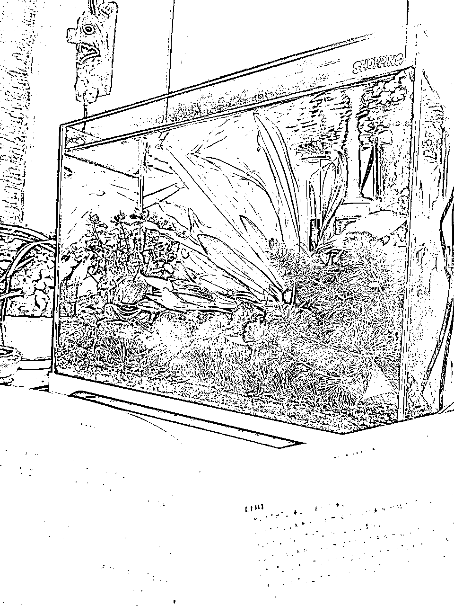
分享一张我的日常生活状态
（人活通透后，做事就不再拧巴，状态也就更舒适了。这种心灵的自由感，就是静静地坐着，都有一种幸福感。我想，这应该就是对现实的掌控感吧。）
领悟到的这种东西，我不知道该用什么名字来称呼，也无法用语言来准确形容，只能意会不可言传。也许这就是老子所说的“道可道也非恒道也；名可名也非恒名也”吧。大白话讲就是：那个姑且被称为“道”的东西是可以讲的，但语言是有局限性的，所以讲出来的就不会是那个“永恒真理”的本来面貌。它的名称和特性，我们可以用语言和文字来形容描述，但形容描述出来的，也不是它本来的名字和特性。
语言是有局限性的，认知理解也是有偏差的，这些都是无法改变的客观事实。所以这些形而上的思考，我只管说与大家，孰对孰错也没有个标准，大家只能自行体悟吧。
我身边有些朋友，都是赚过几百万或几千万的选手。不管是能力也好，或是运气也罢，都不能否认他们曾经或者当下做出的成绩。但就是这样牛的一批的人物，如今却有着不同的境遇。有的焦虑忙碌，有的官司缠身，有的健康受损，有的负债累累，有的身陷囹圄。
我经常会想一个问题：如果他们不曾赚到过这些钱，还会不会有现在这些问题？这没有个标准答案，只是想引发大家的思考，各位可以自行想象。
我经常会思考一个问题：我们创业究竟要赚什么？
可能绝大多数的人会说：废话，赚钱啊。
钱是什么？
钱是现金吗？那只是质量好一些的印刷品而已。
那钱是存款吗？那也只是数据库里的一串数字。
那我们是想赚那些印刷品或者那串数字吗？我想大家肯定也不认同。
我想大家真正想赚的是：我们能得到的具体的东西。比如：车房、用品、服务等等。而得到这些东西的目的，是为了达到某一种理想的生活状态，而钱仅仅只是一个用来计量的单位。我们真正想要的不是计量单位的多寡，而是它带来的某种生活状态。我想这样回答，大家应该没什么异议吧？
你要赚什么样的生活状态？
赚身不由己？赚一身病？一屁股债？赚锦衣玉食？赚纸醉金迷？赚心安理得？赚恬淡舒适？赚自由洒脱？
以上是我列出的一些形容生活状态的词汇，我想不管你现在事业发展到了哪一种地步，都应该想好自己想赚的那种生活状态。因为这是我们在创业中做决策时的核心参照，如果没有这个参照，决策考量就会具体于眼前问题，这样就会为以后的失控埋下隐患。
心得分享：
「如何做出选择」
能量是守恒的，任何一种选择都会有相应的代价。如果这种代价是你无所谓的，那决策就是成功的。但如果付出的代价是你无法接受的，那就是被反噬的。我想大家都是想要成功，没有人希望被反噬。
「如何避免被反噬」
提前想好你想赚的生活状态，在决策的时候以此为参照。如果与你想要的生活状态背道而驰，就重新调整方案；如果与你想要的生活状态相契合，就可以执行落实。
人各有志，只有选择，没有对错。有的人喜欢偏向钱，有的人喜欢偏向闲，有的人喜欢偏向激进，有的人喜欢偏向保守。选择自己所追求的，是我想建议的。不要等陷入到问题中时，才开始拍大腿，说什么“早知道这样当初就应该怎么怎么样”之类的话，既没有意义又会给自己带来二次伤害。提前考虑好这个问题，既然选择了就坦然承担后果，不要后悔更不要内耗。还是那句话：内耗就是自我凌迟。
我的选择：
之前人气旺的时候，很多人都问过我一个问题：你为什么不组建业务团队，利用你的热度快速提升业绩？
我的回答是：不需要赚那么多。
很多人都理解不了，别人都在拼命搞钱，你却说不需要赚那么多？
其实逻辑很简单，因为我的选择是：我想赚一个恬淡舒适、自由洒脱的生活状态。
当然代价就是赚不到太多的钱，这个结果我是可以接受的。毕竟拥有的多，被占有的也就会越多。更多的业绩需要更多的交付，更大的团队需要更大的成本，更多的管理消耗更多的心力，更大的规模承担更大的风险。
我既不想让自己成为欲望的奴隶被牵着走，也不想耗费大量精力和时间去培养团队和管理公司。另外我也很懒，不想为了养活团队而劳碌自己。我还喜欢安静喜欢独来独往，人多了我感觉很被干扰很被消耗。
我想做一个自由洒脱的人，不被任何事务和欲念被动捆绑。所有我做的事情，都应该是我的自由选择。我想多留一些时间和精力给自己和家庭，去学习提升，去锻炼身体，去自我修炼，去陪伴家人。在这些事情中，感受宁静绵长的快乐。
我想做一个数字游民，也就是《每周工作四小时》的作者「蒂莫西・费里斯」所说的“新贵”，也就是“新贵族”。他在书中对新贵的定义是：不是拥有很多别人羡慕的东西，而是拥有自由的生活状态。我想做自己喜欢且感兴趣的事情。比如：读书学习、研究这些架构之类的东西、思考和写作。
我用自由时间打造的山间小院
（上面是夏天小院周围的风景，下面是小院的布置。天气暖和的时候，有空就会带着家人在小院小住，看烟雨彩虹，看落日黄昏。不被捆绑不被消耗，无所谓金钱的多少，随性自在的做事，这是我追求的生活状态。）
之前有圈友找到我，想委托剪辑视频，一个月大概10万左右的费用。我尝试了一下，发现配合起来很不默契，如果合作下去，就会严重消耗我自己，于是就拒绝了合作。虽然对方一再挽留，但我还是选择了不被消耗。不是我不想赚钱，只是这种情况不符合我的选择。毕竟我想赚的是“恬淡舒适、自由洒脱的生活”，而这种合作状态，与我的选择背道而驰。
小贴士：
很多人对自己赚到的结果并不享受，但是想改变却已经骑虎难下。所以与其事后考虑怎么“下虎”，不如在事前，就考虑好到底要“骑什么”。
在当下这个环境，大家的迷茫往往不是因为找不到赚钱的方法，而是因为赚钱的方式太多。可能有人不认可我说的，认为这明明很难，那是因为说这些话的人不是想“赚钱”，而是想“暴富”。
创业就像找对象一样，“选择太多”和“没有选择”一样痛苦，这应该就是诗人说的“乱花渐入迷人眼”吧。能在乱花丛中找到自己心仪的“那一朵”，应该是件很幸福的事情。
究竟要靠什么赚？
这是我们需要认真思考的问题。
靠幻想？靠自嗨？其实有很多人都是这样的状态，这显然是需要我们自省的。
靠机会？靠运气？也是很多人的心态，但这些都是人为不可控的因素，而且即便出现了，也只能是叠加的buff。
靠双手？靠技术？靠巧智？靠信息差？靠资源？靠价值？我们要有自己的选择。
探索一条想走的路线
想靠双手赚钱，就去研究那些有手就能赚的项目，比如撸茅台之类的。
想靠技术赚钱，就挑一个自己感兴趣的技术去钻研，然后去接外包，比如剪辑之类的。
想靠巧智赚钱，就去当韭菜，学学别人是怎么收割的，学会套路自己也去当个镰刀。大可不用鄙夷镰刀，当镰刀也需要有一定的水平，并不是人人都能玩得了的。
想靠信息差赚钱，就去学学怎么找信息差，比如之前的那些无货源项目，那些就是靠信息差赚钱的。不过信息差会被磨平，需要不断地去找。
想靠资源赚钱，首先得有资源，看看自己有什么资源是别人没有的，或者说是比别人强的，然后设计成产品，再把它商业化去打磨。
想靠价值赚钱，就想想自己能为别人提供什么价值，不断强化这方面的优势，设计相应的产品或服务，把它商业化去打磨完善。
心得分享：
「如何避免迷茫」
停止幻想，停止自嗨，忘掉机会和运气，选择一种适合自己的方式作为路线图。沿着选好的路线图思考方案，就不会在决策时陷入迷茫。
同样一件事，不同的人有不同的赚钱方式。每个人的认知不同，心态不同，具体情况也不同。没有对错，只有选择，适合自己就好。
我的选择：
我的选择是：靠价值，长久的价值。这也是我从亦仁身上学到的，也是我自己受过益的。
并不是因为我自己有多高尚，在赚钱这件事情上，我不愿意过多的混杂什么人品道德之类的概念，毕竟人性是复杂的，我只想纯逻辑性的去讨论这个问题。
因为上一个问题我的答案是：我想赚一个恬淡舒适、自由洒脱的生活状态，所以“做长久的价值”才能让我内心恬淡、感觉舒适。
有手就能做的事我感到枯燥乏味，那些技术活我又觉得太累，玩脑子我也没有那水平，信息差我又嫌寿命太短，靠资源我也没什么能拿得出手的资源，所以“靠价值”就是我的最优选。
只做一件有价值的事，让别人长久的受益。既不用过分劳碌，又能获得内心的满足，这符合我的性格和追求。
前段时间看到亦仁在线下聚会中的发言文稿，谈到了德不配位必遭反噬的问题。他认为生财已经出现这种情况了，所以正在提升品质把控，暂时忽略对社群热度的追求，把重心放在价值建设上。看到他的发言我颇有感触，于是即兴写了一篇小作文，来表达我对价值建设的看法，分享给大家。
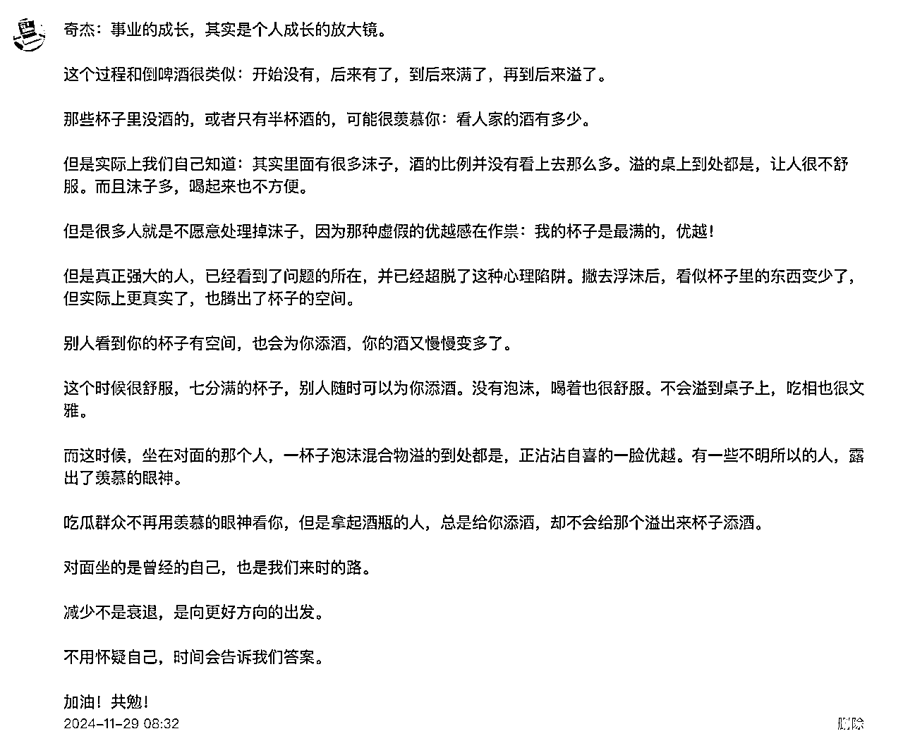
我的小作文：满招损谦受益
（我为什么会有感触？其实在之前，我自己何尝又不是这样呢？由于经验不足让热度超过了价值，明显的德不配位了。幸好我船小好调头，及时意识到了这个问题，在还没有被反噬的时候急流勇退，让自己淡出大家的视野，用了一年的时间，让自己沉淀思考。这篇小作文其实就是写给我自己的，现在大家看到的也是我正在做的价值建设。原帖链接：https://wx.zsxq.com/group/1824528822/topic/2858454885855451）
小贴士：
不同的选择会带来不同的后果，想清楚后果再做选择，就不会陷入困扰。
人人都想追求成功，也都在追求成功的路上胡乱摸索。那成功究竟有没有规律和方法可循呢？看烦了那些鸡血文和毒鸡汤，我在儒家经典中找到了答案。
《大学》告诉我们的成功方法是：格物、致知、诚意、正心、修身、齐家、治国、平天下。这就是“八条目”，是儒家学说中的成功之道。
原文：
古之欲明明德于天下者，先治其国；欲治其国者，先齐其家；欲齐其家者，先修其身；欲修其身者，先正其心；欲正其心者，先诚其意；欲诚其意者，先致其知；致知在格物。
物格而后知至，知至而后意诚，意诚而后心正，心正而后身修，身修而后家齐，家齐而后国治，国治而后天下平。
自天子以至于庶人，壹是皆以修身为本。其本乱而末治者，否矣。其所厚者薄，而其所薄者厚，未之有也。
翻译成大白话就是：
自古以来，想在天下做出一番宏伟光明事业的人，先要治理好自己的国家；想治理好自己的国家，先要建设好自己的团队；想建设好自己的团队，先要修为自身；想修为自身，先让自己心正；想让自己心正，先让自己意念真诚；想意念真诚，先让自己通透有知；通透有知的方法就是格除做事的杂念。
格除做事的杂念后，就能进入通透有知的状态； 通透有知后，就懂得了真诚才是力量；懂得了真诚才是力量，心思意念就纯正了；心思意念纯正后，就会注重自身修为；自身有修为，团队就能建设好；团队建设好后，国家就能治理好；国家治理好后，天下就会归附。
从国家领导到普通老百姓，都是以修为自身为根本的。自身根本没有修为，还能做出一番事业的，那不可能。该重视的东西被轻视，该轻视的东西却被重视，从来没有这样的道理。
心得分享：
「这和我们创业有什么关系呢？」
很多人都一心只想赚钱，却不想想自己凭什么能赚到钱。其实很多有真知灼见的大佬都讲过这个道理，比如：长期主义、日拱一卒、真诚才是力量。这些关键词我在很多大佬的分享中都听到过，奈何太多人都听不进去。这就是因为没有“格物”，所以不能“致知”。因为做事时满心都是杂念，所以就不能通透有知，很多事情就想不明白。
其实答案就在古圣先贤的智慧中：格物、致知、诚意、正心、修身、齐家、治国、平天下。
我们都想“齐家、治国、平天下”，却忽略了“修身”才是这些的根本。而修身的方法就是：格物、致知、诚意、正心。格除杂念才能心明通透；心明通透才能真诚心正；真诚心正的人才会被认可；被认可才能有市场；有市场才会被消费。这才是赚钱的底层逻辑，是老祖宗留给我们的精神财富。该重视的“修为自身”的“根本”不被重视，本该“顺其自然”的“变现”却过度看重，做事业没有这样的道理。
很多人来找我咨询问题时，其实我挺无奈的，因为实在是没办法交流。你讲什么他都听不进去，你想表达的意思他永远get不到，心就像糊了一层猪油一样，感觉油盐不进。因为满脑子都是“杂念”和“私欲”，不能“心明”所有不能“有知”，金玉良言对他也没有丝毫效果，说话做事飘忽躁动，所以没法交流。这应该就是《儒林外史》中所说的“良言难劝该死鬼，慈悲不度自绝人”吧。
小贴士：
赚钱是水到渠成的过程，没想赚钱的事情偏偏就赚钱了，想赚钱的事情却往往赚不到，所以“但行好事，莫问前程”是有道理的。先暂时忘掉赚钱，把重心放在提升修为上吧，排除杂念先把事做好，事做好了钱不就来了吗？栽起梧桐树凤凰自然来，你我都一样，我们共勉吧。
阳明先生在《教条示龙场诸生》中说：“志不立，天下无可成之事，虽百工技艺，未有不本于志者。志不立，如无舵之舟，无衔之马，漂荡奔逸，终亦何所底乎？
翻译成大白话就是：如果不立下志向，天下就没有可以成功的事情。即使是各种工匠技艺，也没有不是以志向为根本的。不立下志向，就如同没有舵的船、没有嚼子的马，四处飘荡、狂奔，最终又会到达什么地方呢？
志向就是明灯，是指引我们前行的方向，如果没有志向，就只能是随波逐流。一会干这个，一会干那个，听说这个赚钱就做这个，听说那个有红利就做那个，我想经历过的人都懂。特别是在互联网项目上，有太多这样的群体，我称之为“互联网流民”，没有贬意，只是形容这种没有方向没有固定根据地的状态。
如果你问一个人：你的志向是什么？我想很多人的答案都是：赚钱。但这是欲望，并不是志向，其实很多人是搞不清志向、目标、欲望之间的区别的。
心得分享：
「我们来厘清一下“志向、目标、欲望”的区别」
什么是志向：就是要在哪方面有所作为，理论上志向是不可能实现的，它只能是一个方向。
什么是目标：就是阶段性的追求，就像石块一样，有志向就是道路，没有就只能是乱石。
什么是欲望：就是内心的渴求，有志向就是动力，没有就是躁动。
举个例子：
亦仁曾分享过，他之前跑过很多项目都赚钱了，但他不满足于做项目赚钱，他想带领更多的人学习赚钱，于是就做了生财有术社群，经过多年的运营，如今做到了现在的规模。
想帮助更多的人学会赚钱，这就是志向；
在做的过程中那些阶段性的追求，就是目标；
至于说赚不赚钱大家都看到了，对于亦仁来说这是结果，对于眼馋他的人来说这就是欲望。
我们经常说深耕，怎么才能做到深耕呢？我想就是：想好自己的志向，并一直朝这个方向努力，这就是深耕。与其东一榔头西一棒槌的折腾，不如想好一件自己擅长的，可以为他人带来价值的事情，一直做一直积累，这样才能产生复利效果，有了价值自然不缺买单的人。
如果暂时想不出自己的志向，不如先试着排除杂念，将自己调整到“心明有知”的状态，杂念越来越少的时候，志向也就慢慢清晰起来了。
不要急慢慢来，这需要一个过程。人生漫长，为自己以后的发展耗费一些时间去沉思，还是很值得去做的一件事。老子说：有之以为利，无之以为用。想要以后“有之”，不如现在先“无之”。适度的留白什么也不做，更有利于我们想清楚自己究竟要做什么，这就是道家所说的“无用之用”。功利心本身就是杂念，在排除杂念这件事上，就不要再功利了。
清心可以明志
（分享一张我在林中静心打坐的照片，今年打坐的密度非常大，通过静观自己的内心，感受意念的变化，排除杂念心明通透，成长日新月异，极力推荐大家尝试一下。）
小贴士：
格除私心杂念，从“利己思维”转换到“利他思维”，想想自己能为别人提供什么价值。静下心来找到自己的志向，让欲望变成动力，把乱石铺成道路。路铺好了，自己能走，别人也能走，赚钱不就是水到渠成的事了。
有了方向，有了目标，有了动力，我们还需要让自己有力量。我们经常会“复盘”自己的操作，那到底该复盘什么呢？如果我们只会复盘成效和技术性的操作，那就有点浅薄了。我们来看看圣贤是怎么复盘的，这才是真正的力量。
原文：
曾子曰：“吾日三省吾身：为人谋而不忠乎？与朋友交而不信乎？传不习乎？”
白话版：
曾子说：我每天都要反思三个问题：为别人办事有没有忠于他的事？与朋友交往有没有不诚信？老师教的东西有没有融会贯通？
心得分享：
「通过每日的复盘，为自己积蓄力量」
别人来求助的时候，是一心协助他把事情做好，还是想着怎么套路他呢？
与别人交往的时候，是要诚信相处，还是要偷奸耍滑呢？
有没有坚持学习，提升自己的专业能力，和服务水平？
我们和圣贤最大的区别就是：圣贤在复盘的时候，考虑的是自己做的够不够好，有没有为他人带来价值。而我们大多数普通人复盘的时候，往往考虑的是套路设计的行不行，有没有攫取到更多的利益。相较之下，高下立判。
小贴士：
我们总说真诚才是力量，如何才能拥有这种力量？不妨学一学圣贤的复盘方法。小胜凭智，大胜靠德。靠小聪明赚钱，是竭泽而渔，是很有限的；用大智慧赚钱，是细水长流，是源源不断的。
上面说的这些东西，都是关于我们自己的小宇宙如何运转的内容。但是创业这件事，除了运转好我们自己的小宇宙外，还需要处理好与外面大宇宙的关系，这样才能防止我们建设好的小宇宙，被外面的大宇宙所影响破坏。
我们在做事的时候，经常会因为别人的质疑而怀疑自己的决定。其实大可不必这样，只要你自己想好了，控制好风险去做就行了。人每一次的成长和进步，不就是因为做了和大多数人不一样的事情，才进步的吗？看不懂你的人，自然也不会认可你的决定，所以不需要那些质疑者的认可，你去做就行了，自然有看懂你的人会认可。
那些质疑你的人，他们看不懂就对了，他们看懂就废了。如果你的操作被所有人看懂了，那这件事还有什么可做的？就像摆地摊卖东西一样，所有人都能看懂，所有人都能进场，那还干啥？你能竞争过那些比你起得早，比你睡得晚，比你喊得响的人吗？连老子这样的圣人都会被人质疑，更何况我们一个凡夫俗子呢？我们不妨看看老子是怎么看待被质疑这件事的。
原文：
上士闻道，勤而行之；中士闻道，若存若亡；下士闻道，大笑之。不笑不足以为道。
故建言有之：明道若昧，进道若退，夷道若纇。
白话版：
水平高的人听到真理法则，就会积极地去实践；水平一般的人听到真理法则，就有点怀疑；水平低的人听到真理和法则，就会嘲笑。不被（没水平的人）嘲笑，就谈不上是什么真理了。
所以古代的格言就说过：（真正）掌握真理法则的人，看起来笨笨的；按照真理法则前进的人，（别人）感觉是在倒退；符合真理法则的好方案，看起来却是不可行的。
心得分享：
我们在做事的时候，周围很多“热心”的人，都会给你“提建议”，出发点可能是好的，但千万要慎接受。因为真正厉害的人，你不问他是不会主动给你讲的，真正厉害的人说话是很慎重的，是不会动不动就胡乱建议的。
我们在征求建议的时候，一定要向拿到结果的人请教，不能因为别人比你年龄大或者是你亲近的人，你就觉得他们说的都是对的，跟着身边亲近的人误事吃亏的例子还少吗？
我曾经听到这样一句话：即便你的决定是坨狗屎，也是你在当时情况下的最好选择。确实就是这样，别人说的再对再有道理，我们也变不成他们，我们只能在自己的认知内和客观条件下做出决策。即便这个决策再烂，那也是你能做出的最好决策了。别人的水平再高，决策再高明，与我们有啥关系呢？我们变不成他们。
多做多错，少做少错，不做就不会错，但“不做”就是最大的错。只有经历过“错”，才知道什么是“对”。做事的过程就是不断“试错”的过程，把错误的都排除掉，剩下的就是对的了。
我常说：做对不容易，做错还不容易吗？所以大胆去做就行了。本着“做错”的想法，放手大胆的去实践，我们就不会胆怯了。
记住：不管对错只要做了，我们就已经走上了“纠错”的道路，而不是只会停留在“不做”的错误中，永远驻足观望。
别人只会质疑你，但是他们又不会对你负责。质疑也好建议也罢，说完他们拍拍屁股就走了，即便你听了他的一两个建议，后面的路不还是需要自己走？他们又不会一直替你。所以不用听着瞎拐，也不需要向谁解释你的用意，按照自己想好的路走，就是最好的选择。“做对”的过程，不就是不断地试错和纠错么？只要我们勇敢的开始，笃定前行坚持打磨，总有收获的那一天，无非早晚而已。
当年我放弃内衣行业的职位和高薪时，有一大堆关心我的人怀疑我脑子坏了。在我从互联网公司的基层行开始干起时，微薄的收入曾一度入不敷出。当时有很多人建议我再回到内衣行业，我依然咬牙坚持不肯回头，这才有了今天的收获和与大家的缘分。这就像打CS一样，当对面的手雷扔过来的时候，后退就是死路一条，只有勇敢往前冲才能活下来。所以不要怕，勇敢冲吧。
小贴士：
坑是需要自己踩的，南墙也得自己去撞，不管对错成败我们都是赚的，要么赚钱，要么赚经验。别人的建议只能是我们的参考，只有自己踩过撞过的才是我们自己的经验，这件事别人终究替代不了。
当别人看到你的收获后，之前所有的质疑都会消失，随之而来的就是：恭维、攀附、和染指。哎，我本来不想说这个话题的，太敏感容易遭唾骂，说深说浅都不对。但是想了想，还是大胆的写吧，为了那些年轻和善良的人不被伤害。
现实中有多少这样的例子呢，你爬坡的时候没有一个人推你，等你做成以后各路人马都来问候你了。有要给你帮忙的，有要给你介绍资源的，有想和你合作的，有想跟着你学习的。一个个看起来热情而良善，不是在表现自己的能力，就是在强调你们的关系，要么就是在诉说自己的处境。这些行为的背后，只有一个统一的目的，就是怎么能得点好处。这让我想起了《增广贤文》中的一首诗：贫居闹市无人问，富在深山有远亲。不信但看筵中酒，杯杯先劝有钱人。
别着急说我内心阴暗，天下熙熙皆为利来，天下攘攘皆为利往，这不是我的内心问题，这就是世界本来的规律。就算是你看这篇帖子的行为，不也是“想让自己学点什么”吗？这是不是“图利”的逻辑呢？所以不用鄙夷这种现象，世界本来就是这么运行的，有什么好鄙夷的呢？
心得分享：
曾经听到过这样一句话：世界上有两种东西不能直视，一个是太阳，一个是人心。虽然这句话不一定全对，但是依然有它对的部分。
人性是复杂的，只有在你落魄的时候，才能看出人的成色。在你取得一些成绩以后，世界就开始变得虚幻起来，周围的人看起来眼神清澈，态度谦恭，有的人生活困难，有的人需要帮助。当你的世界变成这种样子的时候，你就要警惕了。
我并不是说周围人的善和弱是虚假的，也不是否定人心的善，更不是说我们自己就是高尚的。我想说的是：人性是复杂的，只要是人都是一样的，包括我们自己。善的时候并不虚假，但恶的时候也是真恶。因为善恶本来就是同体的，我们并不是要怀疑别人的善，而是要防止别人的“善”，变成我们自己的“恶”。
不管周围的人是善是恶，是可怜还是软弱，那都是你自己认为的，你肉眼凡胎看到的不一定就是真相。世界上的事情都是有因果的，是我们凡人无力左右的。看清自己的身份，做好自己的本分，我们只是个凡人，略微被命运垂青了一丢丢，做出了一点点不足道的成绩，能让我们的妻儿老小改善一些生活条件。千万不要觉得自己就不含糊了，可以和神仙掰一掰腕子了，如果有这样的想法，先看看自己的八字够不够硬。强行干涉别人的因果，必定会遭到反噬，不要总想着去拯救世界，收起你的菩萨心吧。
经营好你自己的事业，保护好自己的成果，不要做烂好人，不要老想去拯救别人。不要随意干涉他人的因果，防止自己被反噬。
我并不是说我们要做一个自私的人，只想说：无条件的付出和妥协，非但不能帮助别人，反而会培养人性的贪嗔痴，不仅会害了别人，也会反噬自己。真正度化他人，不是一味的施舍付出，而是有原则的因果交换。
什么是原则？我想有一句古话可以说明这个问题：“医不叩门，道不轻传，师不顺路，法不空出。”
举个例子：
小时候一直不理解一个事情：孙悟空一个筋斗就可以到达西天，为什么不背着唐僧直接飞过去，而是要一路经历磨难往过走，他们这是吃饱了撑的？好不容易去了西天，如来那帮人还不给真经，还要用“人事”（也就是财物）交换才肯给真经，当时候觉得如来真是坏透了，观音菩萨也不给唐僧说句话。
现在经历过人世沧桑后才看懂了，如果当初观音菩萨提着真经直接给唐僧送过去，他会当回事吗？还愿意用一生的时间去翻译真经广传佛法吗？大概率是往那里一扔吃灰去吧。东土人会觉得那是宝藏吗？可能觉得那是废品，说不定哪天就被小和尚撕了当手纸了。如果是这样，那不是对佛法的亵渎吗？释迦摩尼放弃王位舍下妻儿老小，历经磨难九死一生顿悟出的真法，它还有尊严吗？
当我在做短视频取得成果以后，身边有一些亲友问我怎么做，言语间都在表达自己的困难和迷茫。因为都是和我关系亲密的人，所以我建了一个小群，计划视频直播给他们统一讲一下。到了约定好的时间，我架起手机等待了半个小时后，只等来了一个人。直播没讲成，小群我就解散了，可能他们还不高兴吧。
最终也只有一个人学了，还经常埋怨我讲的不清楚。有一次聊到长素材如何截取的问题时，我说：“你不会录屏吗？原视频太长的话可以录屏需要的那一段。”对方说：“你又没告过我过可以录屏，你不说我怎么知道。”录屏不是日常使用手机的基本操作吗？这还需要专门讲一下？
再后来我研究出了批量混剪，我告诉他我掌握了一天能剪好多视频的技术，本意是想教会他，结果对方却说：“你一天能剪那么多，那我的这几个号你也帮我更新了吧。”那一刻，我的内心是无语的，心想我直接把我的收入转给你得了。我拒绝了，他反而不高兴了，后来也没学我的批量混剪。
请大家注意，没有原则的免费善意，并不能为别人带来帮助，反而是培养了他人的贪嗔痴，造成对自己的反噬。
后来做了教练后，我直播答疑的时候一律不开回放，想学就到点来听，赶不上就下次安排好时间，很多学员觉得我不尽人情。但是大家想想，如果我开了回放还会有人准点来听吗？我一个人对着手机自言自语给谁答疑呢？即便是开了回放，你认为有几个人会真的去看回放呢？到最后如果他们什么也没学会，你觉得学员会反思是自己没用功？还是会认为老师教的不好呢？
所以不要高估人性，没有霹雳手段莫行菩萨心肠。老子都讲过“大德若谷，大白若辱”。真正的慈悲看起来像刻薄一样，有一个小故事就能说明白这个道理。
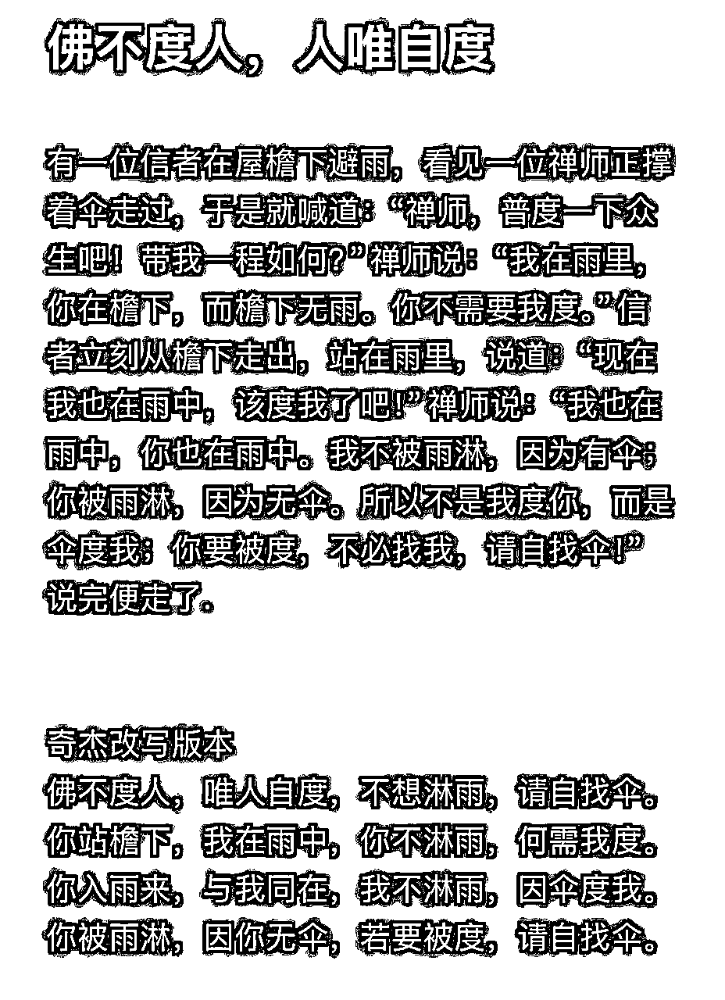
禅师拒绝贪嗔痴
（这是我非常喜欢的一个小故事，即兴改写了一下。信者想白嫖雨伞就道德绑架阐师，阐师如果答应他，看似是帮助了他，实际上是纵容了他的贪嗔痴，这会使这个人越走越歪。真正的度他，是让他养成正确的思维习惯。）
我们的成果都是自己长久积累苦心经营得来的，没必要轻贱自己的东西。别人想取经不是不可以，但最起码得遵循原则来等价值交换。如果对方不是真诚的求取，那你又何苦把自己苦心积累的经验和资源，交给一个并不看重它的人呢？
金钱可以过滤掉90%的虚伪，所以不要只听嘴上的真诚，收费才是检验诚意的法宝。你的成果是用来造福别人的，不是用来惯别人毛病的，真正用心笃行的人，会用你教的东西十倍百倍的赚回成本。而那些巧舌虚伪之人，拿到你的东西也会懒于钻研践行，最后也只会说你的东西狗屁不是。
什么是公平？成本配得上价值才是公平。如果唐僧当初只需要经历一个磨难就能取到真经，那大概率拿回去的经书也是束之高阁，释迦摩尼的真法充其量也就是书架上的纪念品。所以不要盲目的轻贱和廉价，不痛不痒的代价肯定不会被重视，这点我深有体会。收200块钱做2000块钱的交付，好多学员转头就课也不看练习也不做。对外称是跟你学的，结果活干的一塌糊涂，名声都被搞坏了。
小贴士：
不要指望别人会珍惜轻易得来的东西，这就是人性。只有为之付出代价的东西，才会被珍惜，才会被重视。不管别人对你的成果有什么想法，你都要遵循一个原则：拒绝白嫖，等价交换！
是不是别人不白嫖我们的成果，我们就可以敞开“接纳”了呢？如果你这样想，就会陷入另一个陷阱：消耗。
其实不光是人，事情也是一样的。我们想做事，既需要与人打交道，也需要与事打交道，还需要与自己打交道。如果我们不加选择的接纳，就会给我们造成无尽的消耗。一旦开始被消耗，我们的精神就在被凌迟，一刀一刀慢慢耗尽自己，我们的事业也就报废了，真的是切肤之痛。
心得分享：
创业这件事，我认为不应该过度关注快不快，而是应该重点关注久不久。只要长长久久的做下去，我们就可以穿越周期，收获更多的红利。我们老家有一句老话说：若要富，开久铺。说的就是这个道理。
出师未捷身先死，常使英雄泪满襟。事业想做的长久，我们就要严防死守自己“被消耗”，什么东西会消耗我们呢？人、事、情绪、认知。
产生消耗的人：
相处起来很累的；协作起来吃力的；沟通起来费劲的；服务起来麻烦的。
这些就是带来消耗的人，无论这个人是谁，划出你的视线吧。是客户就退款，是员工就辞退，是朋友就少联系。不是他们不好，是和我们不契合。
产生消耗的事：
做起来很耗人的；想起来很闹心的；学起来很心烦的。
这些就是带来消耗的事，不管是哪方面的，否掉这些方案吧。不是方案有啥问题，只是不适合你。汝之参汤，吾之砒霜。别人再受用的，可能对你是有害的，重新选择适合你的吧。
产生消耗的情绪：
生气、愤怒、痛苦、悲伤、无助、兴奋、狂喜。
这些情绪都会消耗你，不是消耗你的力量就是消耗你的智商。从外远离带给你这些情绪的环境，从内提升自己的内核稳定性。内核稳定你就是情绪的主人，内核不稳定你就是情绪的奴隶。
不管对人、对事、对自己，我们都应该保持高质量的关系，高质量关系的特点：彼此相互滋养。
相互滋养的人：
比如能带来进步和启迪的良师益友；能默契配合的事业伙伴；能带来经济利益和情绪价值的客户。
这样的身边人，能给你带来源源不断的收获、支持、和力量。你也很享受和他们相处、与他们协作、为他们服务的感觉。越相处越加持，越加持越有力量，越有力量越长久，越长久越能相处。就这样正向循环，滚滚向前。
相互滋养的事：
特别吸引你的；能为你带来动力的；能让你灵感迸发的；越做越享受的。
这样的事，能给你带来情绪价值和执行动力，做起来不需要打气，也用不着坚持。如果想让你停下来，反而才需要一些毅力。这种事情让你越做越精神越大，而在你的作为下事情也会越来越好越来越顺。越好越想做，越想做越好。
相互滋养的情绪：
淡定、平和、理性。
这样的情绪状态，能加持我们的智商，能蓄养我们的精力，还能明智我们的决策。这种状态能让我们受益，受益后就会更喜欢保持这种状态，保持这种状态又能给我们带来更多的益处。所以，去做一些有助于保持这种情绪的事情吧。
举个例子：
这篇帖子已经写了这么多，你猜我写这篇帖子的时候，感觉心累不累？可能有人会觉得这种事干起来心累，但对我来说写帖子不但不心累，反而我很享受这种感觉。有时候思如泉涌的时候，那根本停不下来，写的能忘了时间，连饭都顾不上吃。帖子滋养了我，也被我滋养了。我越写帖子，自己越有动力；帖子被我越写，内容越有质量；这就是相互滋养的关系。
但同样的事情，如果换做是另一个人，他可能就感到很痛苦。写之前需要给自己打气，写的时候还需要毅力来坚持，那他写不了一会肯定就累了，身体和脑子就都被掏空了。如果是这样，帖子就在消耗他，也在被他消耗。他越写帖子，越自我怀疑；帖子被他越写，内容越空洞乏味；这就是互相消耗的关系。
人和事带来的消耗是外部的，是容易被我们发现并警觉的。但情绪产生的消耗是内部的，是不容易察觉的，更是不好控制的，需要我们刻意的“自觉”和“调整”，才能避免被情绪消耗。所以老子在《道德经》中说：知人者智自知者明，胜人者有力自胜者强。
而“认知”所带来的消耗，那就不是察觉的问题了，而是意识的问题，是命运写下的基础代码。樊登读书（现在叫：帆书）的创始人樊登老师，说过这样一句话：当你的潜意识进入不了你的意识，就会成为你的命运。意思就是：如果你无法意识到你潜意识中存在的问题，那么这些潜意识就会主导你的行为，从而影响你的命运。
心得分享：
你应该听说过“人赚不到自己认知以外的钱”这句话，因为那是根本理解不了的存在。同样的道理，人也做不出自己认知以外的决策，因为那是潜意识里的算法决定的，与成长经历和生活环境有密切关系。所以为什么大家总强调圈子的重要性呢？就是要通过改变圈子来改变生活环境，从而改变自己的认知，进而改变决策的水平，最终改变自己的命运。
高质量的圈子，能培养高质量的认知，有助于提高决策的水平，掌控自己的命运。
举个例子：
跟大家聊个有趣的话题，大家知道“生财共读”吗？其实就是盗版生财的内容，然后再便宜卖给其他不想买门票，但还想看帖子的人。当我第一次听到这个操作的时候，我都惊呆了，竟然还能这样操作？不管是卖的人，还是买的人，用李团长的话来说：你他娘的还真是个天才！
你说买这些盗版帖子的人是要干嘛？应该是想学习赚钱吧？但是看看这些神操作，这种认知与赚钱还有缘份吗？如果这种认知水平都能赚钱了，那还有天理吗？无知啊~
我为什么这么说呢？同样是学习这件事，高质量的认知产生的是投资思维；低品质的认知产生的是投机思维。
投资思维的人买正版，不仅是在学习，更是在融入更好的圈子。结交良师益友，在长久的相处和互动中，逐渐提升自己的认知、能力、和人脉。有这些东西的加持，才会在未来事业有成，我想受过益的人都明白这点，我本人也是受益者之一。
而投机思维的人买盗版，以为自己得了便宜，实际上犯了一个严重的错误。盗版资料有那么多，如果只看点资料和课程就能事业有成，就能具备赚钱的能力，那不是开玩笑？如果看盗版资料就能让人赚到钱，那为什么还连点门票钱都抠搜的舍不得出呢？所以赚不到钱是有原因的。
穷有穷的道理，没有圈子、没有认知、没有能力、没有人脉，只靠看点资料就想脱贫致富？快算了吧，这不仅不会有啥提升，更大的危害是强化了投机算计的心理。这种心理会破坏认知、损害人际关系、干扰思考能力、拉低决策水平，是赚钱最大的敌人。如果就这么发展下去，迟早毁了自己的发展和未来。
大智若愚，大愚若智，孰轻孰重，高下立判。亦仁就在生财，那么多大佬就在生财，大家一起交流，一起成长，一起研究赚钱他不香吗？可偏偏这些价值他们都看不到，却选择去买那没有灵魂的盗版资料。这就像看到了心仪的女生，不是说赶快去搭讪，创造相处的机会。反而是因为怕请吃饭支付饭钱，偷偷地拍了一张女生的照片，回家自己悄悄看去了。这想法也真是绝了，能娶到媳妇也才是怪了。
当初我在生财发的批量混剪的帖子和教程，就被人扒下来挂在朋友圈9.9元出售，过了几天又有朋友截图给我，另一家8.8元的也挂出来了。我就在想他们是会买9.9元的还是8.8元的呢？应该是后一个吧，毕竟还能省1块钱。想到这我都快笑死了，就一块两块的算计吧，看看啥时候就发财了，也是没谁了。
现在我又发这个帖子了，如果你看的是盗版的，可听我一句劝吧：钱是挣出来的，不是省出来的，加入组织和大家一起学习探讨、交流进步、实操打磨，比省这一点钱重要多了。
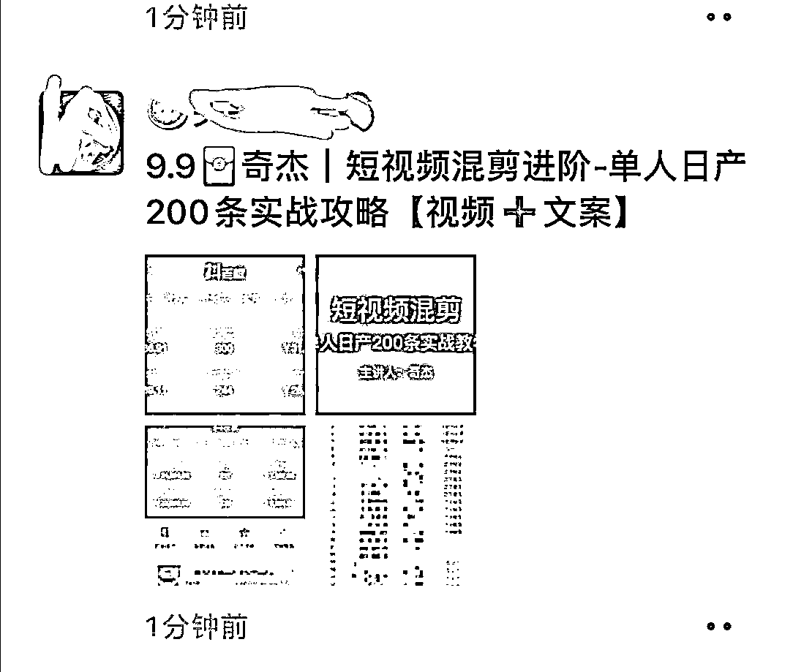
当时朋友圈的盗版广告
（我发现咱们生财的很多老板，考虑问题非常有水平，尊重他人的劳动和成果，做事很讲究，真不愧是能赚到钱的人。我很佩服这些老板的格局，我也学到了这些品质，感谢老板们为我上的宝贵一课。）
这种认知水平的消耗和滋养，现实中还有很多例子，大家可以在生活中慢慢留意和观察。
举个例子：
「看到别人出色」
消耗认知就是：他可有啥了不起的，不就是点那啥么。
滋养认知就是：他是怎么做到的，我也去学一学。
「面对项目的失败」
消耗认知就是：这是什么破项目，害得我亏了这么多。
滋养认知就是：下次选项目的时候，我应该注意这些问题。
「看待学习这件事」
消耗认知就是：我要赚钱，我跟你学了你就得让我也赚很多钱。
滋养认知就是：我要投资自己厚积薄发，为能力和事业加码。
高质量的认知是滋养我们的，会增益我们的成长，加持我们的事业；而低质量的认知是消耗我们的，会抹杀我们的潜能，抑制我们的发展。
小贴士：
不管是与人、与事、与情绪、还是与认知，切断消耗我们的，培养相互滋养的关系，才能给我们带来能量，帮助我们成长进步、事业有成。
帖子终于写完了，说实话我自己都有点惊讶。本来只是想自己梳理一下，后来又想的反正写也写了，不如写成帖子分享给大家，需要的人可以学习，也有利于树立个人品牌，这不也是相互滋养的关系么。
结果越写越多，从开始计划的一万字，到两万字，再到三万字，最终改完已经四万字了。我感觉这都快写成书了，有没有出版社的老板，看看我这篇东西有没有出版的潜力？不考虑签了我吗？说不定我也有成为畅销书作者的潜力呢。哈哈～开个玩笑，轻松一下。
为了梳理这些东西，我前前后后思考了一年多，然后一个人闭关了两个月。除了基本的生活：吃饭、睡觉、上厕所、学习、锻炼身体，剩下的精力和时间就全泡在这件事上了，从白天到黑夜，人瘦了5斤。
活了小半辈子了，从来没有像这次一样做一件事情这样专注过，这应该归功于这些年自我修行的成果吧。尤其是今年，大量的时间沉思独处学习锻炼，感觉自己的变化日新月异，成长突飞猛进，所以才有了现在这样的做事状态吧。
你能坚持看到这里我也是挺佩服的，几万字的帖子竟然就耐心看完了。虽然我不知道你是谁，也不知道你有没有收获，但我自己梳理完这些后，收获还是特别大的。这就是教别人的越多自己学到的更多，看来真的是不能吝啬分享。
既然你已经看到这儿了，也不差再多看几个字，我想再啰嗦几句，讨论一点题外话，希望能给你带来点启发。
人们都说大环境不好，不好赚钱了，你觉得真的是这样吗？我看短视频平台上，业绩好的账号还是多的很啊。我认为大环境只是客观环境，大环境不好不代表小环境不可以好，这些账号不还是牛的一批？即便是大环境好的时候，那小环境也不一定好，不是吗？赚不到钱的也还是大有人在。
啥时候也有人赚钱，啥时候也有人不赚钱。其实我们不必纠结什么大环境和小环境好不好，不管环境好与不好，我们不都还得继续干吗？不管环境如何变化，我们只需要做一件事就好，那就是：向前走！这也是阳明先生在心学中的重要概念：主一，专注于一个天理。
那创业的天理是什么呢？我曾经听过这么一句话，我个人非常受益，分享给你：大环境好时做市场，大环境不好就练内功。经济不景气的时候，我们应该做什么才是练内功呢？我的答案是：沉淀、梳理、布局、学习、准备。
你一定听过这句话：万事俱备，只欠东风。这是诸葛亮在打赤壁之战时，火攻曹营时的关键因素。我们做事业也是一样的，东风总会来的，但是你万事俱备了吗？如果没有，东风来了又能怎样呢？不也就仅仅是场风而已？所以咱们都戒骄戒躁，去准备“万事”吧。
不管情况怎样，都不要内耗，记住内耗就是自我凌迟。接纳自己，累了就躺平休息休息，咱休息归休息，但咱不要消极，也不要怠工，休息好了就继续干。如果等东风来了，才开始匆忙做准备，那不就晚了么？
好了我想啰嗦的事也写完了，最近可是把我憋坏了，真想出去好好旅游一番。哈哈~ 开开玩笑，说给你听的东西，也是说给我自己听的。马上年底了，我也继续准备和布局2025年的事情吧，理理思路搭一套新的业务链路，梳理一下新课程的架构。你也打起精神，去准备布局下一年的事情吧。我们一起加油！
年底了，我爆肝整理的这篇帖子，就当做是送给大家的新年礼物吧。希望本帖，能对大家有所帮助。开心~
祝大家运筹帷幄，一如既往，事业顺遂，财源不断。
——你的好朋友-奇杰
2024年12月于太原
（注：如果你有什么想说的，就去生财原帖评论区讨论吧。是生财原帖的评论区哈，不是飞书文档的评论区。）